<html xmlns:v="urn:schemas-microsoft-com:vml"
xmlns:o="urn:schemas-microsoft-com:office:office"
xmlns:w="urn:schemas-microsoft-com:office:word"
xmlns:st1="urn:schemas-microsoft-com:office:smarttags"
xmlns="http://www.w3.org/TR/REC-html40">

<head>
<meta http-equiv=Content-Type content="text/html; charset=windows-1252">
<meta name=ProgId content=Word.Document>
<meta name=Generator content="Microsoft Word 10">
<meta name=Originator content="Microsoft Word 10">
<link rel=File-List href="article_files/filelist.xml">
<link rel=Edit-Time-Data href="article_files/editdata.mso">
<!--[if !mso]>
<style>
v\:* {behavior:url(#default#VML);}
o\:* {behavior:url(#default#VML);}
w\:* {behavior:url(#default#VML);}
.shape {behavior:url(#default#VML);}
</style>
<![endif]-->
<title>Introduction to UML2 Profiles</title>
<o:SmartTagType namespaceuri="urn:schemas-microsoft-com:office:smarttags"
 name="country-region"/>
<o:SmartTagType namespaceuri="urn:schemas-microsoft-com:office:smarttags"
 name="place"/>
<o:SmartTagType namespaceuri="urn:schemas-microsoft-com:office:smarttags"
 name="State"/>
<o:SmartTagType namespaceuri="urn:schemas-microsoft-com:office:smarttags"
 name="City"/>
<o:SmartTagType namespaceuri="urn:schemas-microsoft-com:office:smarttags"
 name="date"/>
<!--[if gte mso 9]><xml>
 <o:DocumentProperties>
  <o:Author>khussey</o:Author>
  <o:Template>Normal</o:Template>
  <o:LastAuthor>jbruck</o:LastAuthor>
  <o:Revision>179</o:Revision>
  <o:TotalTime>4753</o:TotalTime>
  <o:Created>2004-10-25T17:54:00Z</o:Created>
  <o:LastSaved>2008-07-11T19:41:00Z</o:LastSaved>
  <o:Pages>1</o:Pages>
  <o:Words>8775</o:Words>
  <o:Characters>50024</o:Characters>
  <o:Company>Rational Software</o:Company>
  <o:Lines>416</o:Lines>
  <o:Paragraphs>117</o:Paragraphs>
  <o:CharactersWithSpaces>58682</o:CharactersWithSpaces>
  <o:Version>10.6830</o:Version>
 </o:DocumentProperties>
</xml><![endif]--><!--[if gte mso 9]><xml>
 <w:WordDocument>
  <w:SpellingState>Clean</w:SpellingState>
  <w:GrammarState>Clean</w:GrammarState>
  <w:Compatibility>
   <w:ApplyBreakingRules/>
  </w:Compatibility>
  <w:BrowserLevel>MicrosoftInternetExplorer4</w:BrowserLevel>
 </w:WordDocument>
</xml><![endif]--><!--[if !mso]><object
 classid="clsid:38481807-CA0E-42D2-BF39-B33AF135CC4D" id=ieooui></object>
<style>
st1\:*{behavior:url(#ieooui) }
</style>
<![endif]-->
<link rel=Stylesheet type="text/css" media=all href="default_style.css">
<style>
<!--
 /* Font Definitions */
 @font-face
	{font-family:"MS Mincho";
	panose-1:2 2 6 9 4 2 5 8 3 4;
	mso-font-alt:"MS Mincho";
	mso-font-charset:128;
	mso-generic-font-family:modern;
	mso-font-pitch:fixed;
	mso-font-signature:-1610612033 1757936891 16 0 131231 0;}
@font-face
	{font-family:Tahoma;
	panose-1:2 11 6 4 3 5 4 4 2 4;
	mso-font-charset:238;
	mso-generic-font-family:swiss;
	mso-font-pitch:variable;
	mso-font-signature:1627421319 -2147483648 8 0 66047 0;}
@font-face
	{font-family:Verdana;
	panose-1:2 11 6 4 3 5 4 4 2 4;
	mso-font-charset:238;
	mso-generic-font-family:swiss;
	mso-font-pitch:variable;
	mso-font-signature:536871559 0 0 0 415 0;}
@font-face
	{font-family:"\@MS Mincho";
	panose-1:2 2 6 9 4 2 5 8 3 4;
	mso-font-charset:128;
	mso-generic-font-family:modern;
	mso-font-pitch:fixed;
	mso-font-signature:-1610612033 1757936891 16 0 131231 0;}
 /* Style Definitions */
 p.MsoNormal, li.MsoNormal, div.MsoNormal
	{mso-style-parent:"";
	margin:0in;
	margin-bottom:.0001pt;
	mso-pagination:widow-orphan;
	font-size:12.0pt;
	font-family:"Times New Roman";
	mso-fareast-font-family:"Times New Roman";
	mso-believe-normal-left:yes;}
h1
	{mso-margin-top-alt:auto;
	margin-right:0in;
	mso-margin-bottom-alt:auto;
	margin-left:0in;
	mso-pagination:widow-orphan;
	mso-outline-level:1;
	font-size:21.0pt;
	mso-fareast-font-family:"MS Mincho";
	font-weight:bold;}
h2
	{mso-margin-top-alt:auto;
	margin-right:0in;
	mso-margin-bottom-alt:auto;
	margin-left:0in;
	mso-line-height-alt:10.5pt;
	mso-pagination:widow-orphan;
	mso-outline-level:2;
	font-size:18.0pt;
	mso-fareast-font-family:"MS Mincho";
	font-weight:bold;}
h3
	{mso-margin-top-alt:auto;
	margin-right:0in;
	mso-margin-bottom-alt:auto;
	margin-left:0in;
	mso-pagination:widow-orphan;
	mso-outline-level:3;
	font-size:14.0pt;
	mso-fareast-font-family:"MS Mincho";
	font-weight:bold;}
a:link, span.MsoHyperlink
	{color:blue;
	text-decoration:underline;
	text-underline:single;}
a:visited, span.MsoHyperlinkFollowed
	{color:purple;
	text-decoration:underline;
	text-underline:single;}
p.MsoDocumentMap, li.MsoDocumentMap, div.MsoDocumentMap
	{mso-style-noshow:yes;
	margin:0in;
	margin-bottom:.0001pt;
	mso-pagination:widow-orphan;
	background:navy;
	font-size:12.0pt;
	font-family:Tahoma;
	mso-fareast-font-family:"Times New Roman";}
p
	{mso-margin-top-alt:auto;
	margin-right:0in;
	mso-margin-bottom-alt:auto;
	margin-left:0in;
	mso-pagination:widow-orphan;
	font-size:10.0pt;
	mso-fareast-font-family:"Times New Roman";}
code
	{mso-fareast-font-family:"Times New Roman";}
pre
	{margin:0in;
	margin-bottom:.0001pt;
	mso-pagination:widow-orphan;
	tab-stops:45.8pt 91.6pt 137.4pt 183.2pt 229.0pt 274.8pt 320.6pt 366.4pt 412.2pt 458.0pt 503.8pt 549.6pt 595.4pt 641.2pt 687.0pt 732.8pt;
	font-size:10.0pt;
	mso-fareast-font-family:"Times New Roman";}
p.indextop, li.indextop, div.indextop
	{mso-style-name:indextop;
	mso-margin-top-alt:auto;
	margin-right:0in;
	mso-margin-bottom-alt:auto;
	margin-left:0in;
	mso-pagination:widow-orphan;
	font-size:24.0pt;
	mso-fareast-font-family:"Times New Roman";
	font-weight:bold;}
p.indexsub, li.indexsub, div.indexsub
	{mso-style-name:indexsub;
	mso-margin-top-alt:auto;
	margin-right:0in;
	mso-margin-bottom-alt:auto;
	margin-left:0in;
	mso-pagination:widow-orphan;
	font-size:7.5pt;
	mso-fareast-font-family:"Times New Roman";}
span.SpellE
	{mso-style-name:"";
	mso-spl-e:yes;}
span.GramE
	{mso-style-name:"";
	mso-gram-e:yes;}
@page Section1
	{size:8.5in 11.0in;
	margin:1.0in 1.25in 1.0in 1.25in;
	mso-header-margin:.5in;
	mso-footer-margin:.5in;
	mso-paper-source:0;}
div.Section1
	{page:Section1;}
 /* List Definitions */
 @list l0
	{mso-list-id:2098360590;
	mso-list-type:hybrid;
	mso-list-template-ids:-501428010 67698705 67698713 67698715 67698703 67698713 67698715 67698703 67698713 67698715;}
@list l0:level1
	{mso-level-text:"%1\)";
	mso-level-tab-stop:.5in;
	mso-level-number-position:left;
	text-indent:-.25in;}
@list l0:level2
	{mso-level-tab-stop:1.0in;
	mso-level-number-position:left;
	text-indent:-.25in;}
@list l0:level3
	{mso-level-tab-stop:1.5in;
	mso-level-number-position:left;
	text-indent:-.25in;}
@list l0:level4
	{mso-level-tab-stop:2.0in;
	mso-level-number-position:left;
	text-indent:-.25in;}
@list l0:level5
	{mso-level-tab-stop:2.5in;
	mso-level-number-position:left;
	text-indent:-.25in;}
@list l0:level6
	{mso-level-tab-stop:3.0in;
	mso-level-number-position:left;
	text-indent:-.25in;}
@list l0:level7
	{mso-level-tab-stop:3.5in;
	mso-level-number-position:left;
	text-indent:-.25in;}
@list l0:level8
	{mso-level-tab-stop:4.0in;
	mso-level-number-position:left;
	text-indent:-.25in;}
@list l0:level9
	{mso-level-tab-stop:4.5in;
	mso-level-number-position:left;
	text-indent:-.25in;}
ol
	{margin-bottom:0in;}
ul
	{margin-bottom:0in;}
-->
</style>
<!--[if gte mso 10]>
<style>
 /* Style Definitions */
 table.MsoNormalTable
	{mso-style-name:"Table Normal";
	mso-tstyle-rowband-size:0;
	mso-tstyle-colband-size:0;
	mso-style-noshow:yes;
	mso-style-parent:"";
	mso-padding-alt:0in 5.4pt 0in 5.4pt;
	mso-para-margin:0in;
	mso-para-margin-bottom:.0001pt;
	mso-pagination:widow-orphan;
	font-size:10.0pt;
	font-family:"Times New Roman";}
</style>
<![endif]--><![if mso 9]>
<style>
p.MsoNormal
	{margin-left:8.5pt;}
</style>
<![endif]><!--[if gte mso 9]><xml>
 <o:shapedefaults v:ext="edit" spidmax="10242"/>
</xml><![endif]--><!--[if gte mso 9]><xml>
 <o:shapelayout v:ext="edit">
  <o:idmap v:ext="edit" data="1"/>
 </o:shapelayout></xml><![endif]-->
</head>

<body lang=EN-US link=blue vlink=purple style='tab-interval:.5in;margin-left:
8.5pt;margin-top:14.2pt'>

<div class=Section1>

<p class=MsoNormal align=right style='text-align:right'><span style='font-size:
10.0pt;font-family:Arial'>&nbsp; </span><span style='font-size:10.0pt'>Copyright
� 2004, 2008 International Business Machines Corp.</span><span
style='font-size:10.0pt;font-family:Arial'> <o:p></o:p></span></p>

<div align=right>

<table class=MsoNormalTable border=0 cellspacing=0 cellpadding=0 width="100%"
 style='width:100.0%;mso-cellspacing:0in;mso-padding-alt:1.5pt 1.5pt 1.5pt 1.5pt'>
 <tr style='mso-yfti-irow:0;mso-yfti-lastrow:yes'>
  <td valign=top style='background:#0080C0;padding:1.5pt 1.5pt 1.5pt 1.5pt'>
  <p class=MsoNormal><span style='font-size:10.0pt;font-family:Arial'><o:p>&nbsp;</o:p></span></p>
  </td>
 </tr>
</table>

</div>

<h3><span style='color:red'><b>NOTE that this article is obsolete; please see <a href="http://wiki.eclipse.org/MDT/UML2/Introduction_to_UML2_Profiles">here</a> instead.</b></span></h3>

<h1></h1>

<p>&nbsp;</p>

<h1 align=center style='text-align:center'>Introduction to UML2 Profiles</h1>

<blockquote style='margin-top:5.0pt;margin-bottom:5.0pt'>

<p class=MsoNormal><b><span style='font-size:10.0pt;font-family:Arial'>Summary</span></b><span
style='font-size:10.0pt;font-family:Arial'> <br>
This article describes how to work with profiles using the UML2 plug-ins for
Eclipse. In particular, it gives an overview of how to create and apply
profiles (and their contents) both programmatically and by using the sample UML
editor<o:p></o:p></span></p>

<p><span class=SpellE><b>Kenn</b></span><b> Hussey, IBM</b><br>
<st1:date Year="2006" Day="18" Month="7">July 18, 2006</st1:date> (Updated: <st1:date
Year="2008" Day="11" Month="7">July 11, 2008</st1:date> for Eclipse 3.4; James <span
class=SpellE>Bruck</span>)</p>

</blockquote>

<div class=MsoNormal align=center style='text-align:center'><span
style='font-size:10.0pt;font-family:Arial'>

<hr size=2 width="100%" align=center>

</span></div>

<h2>Prerequisites</h2>

<p>To start using UML2 (and to follow along with the example in this article),
you must have <span class=MsoHyperlink><a
href="http://download.eclipse.org/eclipse/downloads/">Eclipse 3.4</a></span>, <span
class=MsoHyperlink><a
href="http://www.eclipse.org/modeling/emf/downloads/?project=emf">EMF 2.4</a></span>,
and <span class=MsoHyperlink><a
href="http://www.eclipse.org/modeling/mdt/downloads/?project=uml2">UML2 2.2</a></span>
installed.<span style='mso-spacerun:yes'>� </span></p>

<p>You can either download the zips individually and expand them out or follow
the steps below:<span style='mso-spacerun:yes'>� </span></p>

<p style='margin-left:.5in;text-indent:-.25in;mso-list:l0 level1 lfo1;
tab-stops:list .5in'><![if !supportLists]><span style='mso-fareast-font-family:
Arial'><span style='mso-list:Ignore'>1)<span style='font:7.0pt "Times New Roman"'>
</span></span></span><![endif]><span dir=LTR><span
style='mso-spacerun:yes'>�</span>Download and run Eclipse 3.4</span></p>

<p style='margin-left:.5in;text-indent:-.25in;mso-list:l0 level1 lfo1;
tab-stops:list .5in'><![if !supportLists]><span style='mso-fareast-font-family:
Arial'><span style='mso-list:Ignore'>2)<span style='font:7.0pt "Times New Roman"'>
</span></span></span><![endif]><span dir=LTR><span
style='mso-spacerun:yes'>�</span>Select the <b>Help</b> &gt; <b>Software
Updates � </b>menu</span></p>

<p style='margin-left:.5in;text-indent:-.25in;mso-list:l0 level1 lfo1;
tab-stops:list .5in'><![if !supportLists]><span style='mso-fareast-font-family:
Arial'><span style='mso-list:Ignore'>3)<span style='font:7.0pt "Times New Roman"'>
</span></span></span><![endif]><span dir=LTR><span
style='mso-spacerun:yes'>�</span>Select the <b>Available Software</b> tab and
expand the <b>Ganymede\Model and Model Development</b> tree item.</span></p>

<p style='margin-left:.25in'><!--[if gte vml 1]><v:shapetype id="_x0000_t75"
 coordsize="21600,21600" o:spt="75" o:preferrelative="t" path="m@4@5l@4@11@9@11@9@5xe"
 filled="f" stroked="f">
 <v:stroke joinstyle="miter"/>
 <v:formulas>
  <v:f eqn="if lineDrawn pixelLineWidth 0"/>
  <v:f eqn="sum @0 1 0"/>
  <v:f eqn="sum 0 0 @1"/>
  <v:f eqn="prod @2 1 2"/>
  <v:f eqn="prod @3 21600 pixelWidth"/>
  <v:f eqn="prod @3 21600 pixelHeight"/>
  <v:f eqn="sum @0 0 1"/>
  <v:f eqn="prod @6 1 2"/>
  <v:f eqn="prod @7 21600 pixelWidth"/>
  <v:f eqn="sum @8 21600 0"/>
  <v:f eqn="prod @7 21600 pixelHeight"/>
  <v:f eqn="sum @10 21600 0"/>
 </v:formulas>
 <v:path o:extrusionok="f" gradientshapeok="t" o:connecttype="rect"/>
 <o:lock v:ext="edit" aspectratio="t"/>
</v:shapetype><v:shape id="_x0000_i1128" type="#_x0000_t75" style='width:581.25pt;
 height:408.75pt'>
 <v:imagedata src="article_files/image037.png" o:title=""/>
</v:shape><![endif]--><![if !vml]>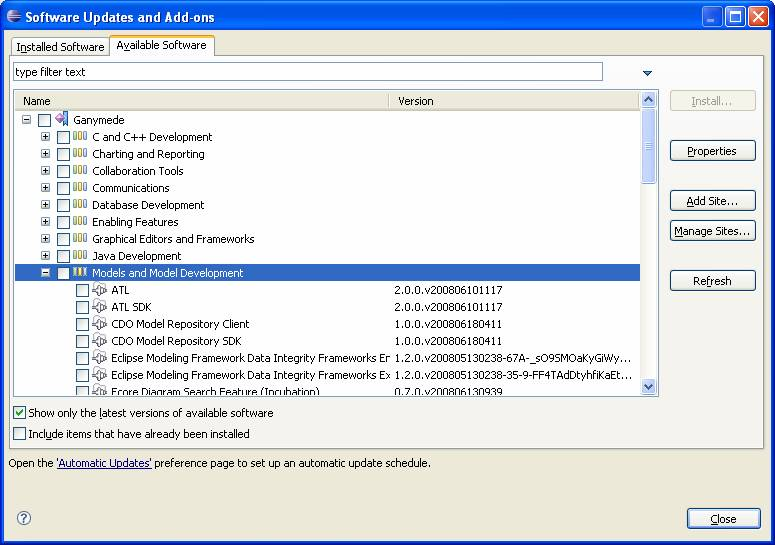<![endif]></p>

<p style='margin-left:.5in;text-indent:-.25in;mso-list:l0 level1 lfo1;
tab-stops:list .5in'><![if !supportLists]><span style='mso-fareast-font-family:
Arial'><span style='mso-list:Ignore'>4)<span style='font:7.0pt "Times New Roman"'>
</span></span></span><![endif]><span dir=LTR><span
style='mso-spacerun:yes'>�</span>Select <b>UML2 End-User Features</b> and <b>UML2
Extender SDK</b>.<span style='mso-spacerun:yes'>� </span>The version should
indicate 2.2.0 (or later).</span></p>

<p style='margin-left:.5in;text-indent:-.25in;mso-list:l0 level1 lfo1;
tab-stops:list .5in'><![if !supportLists]><span style='mso-fareast-font-family:
Arial'><span style='mso-list:Ignore'>5)<span style='font:7.0pt "Times New Roman"'>
</span></span></span><![endif]><span dir=LTR><span
style='mso-spacerun:yes'>�</span>Click <b>Install<span class=GramE>� <span
style='font-weight:normal'>.</span></span></b></span></p>

<p>At this stage, UML2 2.2 and all dependencies should be installed.</p>

<h2>Introduction</h2>

<p>This article will walk you through the basics of creating and applying
profiles using UML2. Using a subset of the <span class=SpellE>Ecore</span>
profile (see below) and the model we described in the �Getting Started with
UML2� article [1] (the ExtendedPO2 model, shamelessly �borrowed� from the EMF
�bible� [2]) as an example, we�ll look at what�s involved in creating some of
the more common elements that make up a profile. For each type of element,
we�ll first explain the creation process using the sample UML editor and
explore how to accomplish the same thing using Java code. Then we�ll look at
what�s involved in applying profiles and stereotypes to models. The ExtendedPO2
model is shown below.</p>

<p><!--[if gte vml 1]><v:shape id="_x0000_i1027" type="#_x0000_t75" style='width:581.25pt;
 height:407.25pt'>
 <v:imagedata src="article_files/image039.emz" o:title=""/>
</v:shape><![endif]--><![if !vml]>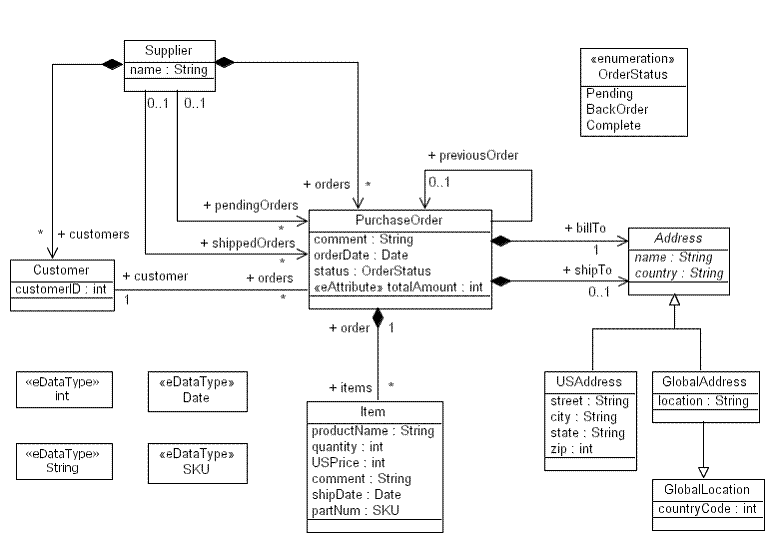<![endif]></p>

<p>As described in the EMF book, some of the attributes of certain <span
class=SpellE>Ecore</span> elements cannot be expressed directly in UML�. EMF
provides a Rose property file (<span class=SpellE><span style='font-family:
"Courier New"'>ecore.pty</span></span>) that defines all the non- UML�
properties needed to completely express an EMF model using Rational Rose. The
same thing can be achieved for a UML2 model using a profile.</p>

<p>The <span class=SpellE>Ecore</span> properties for attributes are shown
below. These properties can be expressed in UML2 as properties owned by a
stereotype that extends the <span style='font-family:"Courier New"'>Property</span>
<span class=SpellE>metaclass</span>.</p>

<p><!--[if gte vml 1]><v:shape id="_x0000_i1028" type="#_x0000_t75" style='width:258pt;
 height:306.75pt'>
 <v:imagedata src="article_files/image003.png" o:title=""/>
</v:shape><![endif]--><![if !vml]>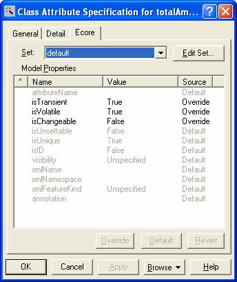<![endif]></p>

<p>The <span class=SpellE>Ecore</span> properties for association ends are
shown below. These properties can also be expressed in UML2 as properties owned
by a stereotype that extends the <span style='font-family:"Courier New"'>Property</span>
<span class=SpellE>metaclass</span>.</p>

<p><!--[if gte vml 1]><v:shape id="_x0000_i1029" type="#_x0000_t75" style='width:258pt;
 height:320.25pt'>
 <v:imagedata src="article_files/image005.png" o:title=""/>
</v:shape><![endif]--><![if !vml]>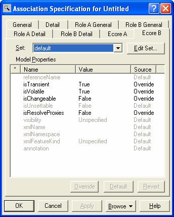<![endif]></p>

<h2>Getting Started</h2>

<p>Before getting started, you�ll need to create a simple project in your
workspace. This project will serve as the container for the profile that we�ll
create using the UML editor. To create a simple project for this article,
follow these steps:</p>

<p style='margin-left:27.5pt'>1) Select the <b>Window &gt; Open Perspective
&gt; <span class=GramE>Other</span>�</b> menu item.</p>

<p style='margin-left:27.5pt'>2) Select the <b>Resource</b> perspective and
press the <b>OK</b> button.</p>

<p style='margin-left:27.5pt'>3) Select the <b>File &gt; New &gt; Project...</b>
menu item.</p>

<p style='margin-left:27.5pt'>4) Select the <b>Project</b> wizard from the <b>General</b>
category and press the <b>Next &gt;</b> button.</p>

<p style='margin-left:27.5pt'>5) Enter a project name (i.e. �Introduction to
UML2 Profiles�), and press the <b>Finish</b> button.</p>

<p>At this point your workspace should look something like this:</p>

<p><!--[if gte vml 1]><v:shape id="_x0000_i1129" type="#_x0000_t75" style='width:624pt;
 height:405.75pt'>
 <v:imagedata src="article_files/image001.png" o:title=""/>
</v:shape><![endif]--><![if !vml]>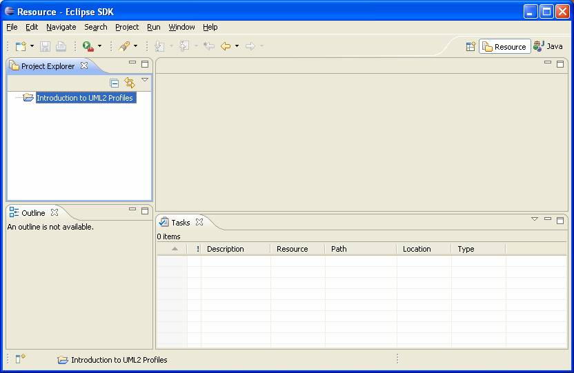<![endif]></p>

<p>OK, that should be enough to get us going with the UML editor. Now, to
follow along with the programmatic approach to creating profiles, we�ll assume
that you�ve created a Java class (named, say, �IntroductionToUML2Profiles�) in
which you can write some code to construct our sample profile. The code
snippets we�ll show assume you�ve defined the following utility methods to give
the user information on the program�s status:</p>

<pre style='margin-left:9.0pt'><span
style='mso-tab-count:1'>� </span><span class=GramE>public</span> static <span
class=SpellE>boolean</span> DEBUG = true;</pre><pre style='margin-left:9.0pt'><o:p>&nbsp;</o:p></pre><pre
style='margin-left:9.0pt'><span style='mso-tab-count:1'>���� </span><span
class=GramE>protected</span> static void out(String output) {</pre><pre
style='margin-left:9.0pt'><o:p>&nbsp;</o:p></pre><pre style='margin-left:9.0pt'><span
style='mso-tab-count:2'>����������� </span><span class=GramE>if</span> (DEBUG) {</pre><pre
style='margin-left:9.0pt'><span style='mso-tab-count:
3'>���������������� </span><span class=SpellE><span class=GramE>System.out.println</span></span><span
class=GramE>(</span>output);</pre><pre style='margin-left:9.0pt'><span
style='mso-tab-count:2'>����������� </span>}</pre><pre style='margin-left:9.0pt'><span
style='mso-tab-count:1'>���� </span>}</pre><pre style='margin-left:9.0pt'><o:p>&nbsp;</o:p></pre><pre
style='margin-left:9.0pt'><span style='mso-tab-count:1'>���� </span><span
class=GramE>protected</span> static void err(String error) {</pre><pre
style='margin-left:9.0pt'><span style='mso-tab-count:
2'>�������� </span><span class=SpellE><span class=GramE>System.err.println</span></span><span
class=GramE>(</span>error);</pre><pre style='margin-left:9.0pt'><span
style='mso-tab-count:1'>���� </span>}</pre>

<p style='tab-stops:45.8pt 91.6pt 137.4pt 183.2pt 229.0pt 274.8pt 320.6pt 366.4pt 412.2pt 458.0pt 503.8pt 549.6pt 595.4pt 641.2pt 687.0pt 732.8pt'>A
static debug flag <span
style='mso-spacerun:yes'>�</span>can be used to enable or disable verbose information
printed to the system�s output <span class=GramE>stream </span>. Errors will always be printed to the system�s error <span
class=GramE>stream </span>.</p>

<p style='tab-stops:45.8pt 91.6pt 137.4pt 183.2pt 229.0pt 274.8pt 320.6pt 366.4pt 412.2pt 458.0pt 503.8pt 549.6pt 595.4pt 641.2pt 687.0pt 732.8pt'>All
<span class=SpellE>righty</span> then! In each of the following subsections,
we�ll look at how to create or manipulate a different kind of UML element,
starting with profiles.</p>

<h3 style='tab-stops:45.8pt 91.6pt 137.4pt 183.2pt 229.0pt 274.8pt 320.6pt 366.4pt 412.2pt 458.0pt 503.8pt 549.6pt 595.4pt 641.2pt 687.0pt 732.8pt'>Creating
Profiles</h3>

<p style='tab-stops:45.8pt 91.6pt 137.4pt 183.2pt 229.0pt 274.8pt 320.6pt 366.4pt 412.2pt 458.0pt 503.8pt 549.6pt 595.4pt 641.2pt 687.0pt 732.8pt'>At
the root of every UML2 profile is a profile element. It defines limited
extensions to a reference <span class=SpellE>metamodel</span> (i.e. UML) with
the purpose of adapting the <span class=SpellE>metamodel</span> to a specific
platform or domain (e.g. EMF). <span class=SpellE>Metaclasses</span> from the
reference <span class=SpellE>metamodel</span> are extended via stereotypes,
which are defined as part of profiles. To create a profile using the UML
editor, follow these steps:</p>

<p style='margin-left:27.5pt;tab-stops:45.8pt 91.6pt 137.4pt 183.2pt 229.0pt 274.8pt 320.6pt 366.4pt 412.2pt 458.0pt 503.8pt 549.6pt 595.4pt 641.2pt 687.0pt 732.8pt'>1)
Select a project (i.e. <b>Introduction to UML2 Profiles</b>) in the <b>Project
Explorer</b> view and select the <b>File &gt; New &gt; <span class=GramE>Other</span>...</b>
menu item.</p>

<p style='margin-left:27.5pt;tab-stops:45.8pt 91.6pt 137.4pt 183.2pt 229.0pt 274.8pt 320.6pt 366.4pt 412.2pt 458.0pt 503.8pt 549.6pt 595.4pt 641.2pt 687.0pt 732.8pt'>2)
Select the <b>UML Model</b> wizard from the <b>Example EMF Model Creation
Wizards</b> category and press the <b>Next &gt;</b> button.</p>

<p style='margin-left:27.5pt;tab-stops:45.8pt 91.6pt 137.4pt 183.2pt 229.0pt 274.8pt 320.6pt 366.4pt 412.2pt 458.0pt 503.8pt 549.6pt 595.4pt 641.2pt 687.0pt 732.8pt'>3)
Enter a file name (i.e. �<span class=SpellE>Ecore.profile.uml</span>�) and
press the <b>Next &gt;</b> button.</p>

<p style='margin-left:27.5pt;tab-stops:45.8pt 91.6pt 137.4pt 183.2pt 229.0pt 274.8pt 320.6pt 366.4pt 412.2pt 458.0pt 503.8pt 549.6pt 595.4pt 641.2pt 687.0pt 732.8pt'>4)
Select <b>Profile</b> for the model object and press the <b>Finish</b> button.</p>

<p style='margin-left:27.5pt;tab-stops:45.8pt 91.6pt 137.4pt 183.2pt 229.0pt 274.8pt 320.6pt 366.4pt 412.2pt 458.0pt 503.8pt 549.6pt 595.4pt 641.2pt 687.0pt 732.8pt'>5)
Select the <b>Window &gt; Show View &gt; Properties</b> menu item.</p>

<p style='margin-left:27.5pt;tab-stops:45.8pt 91.6pt 137.4pt 183.2pt 229.0pt 274.8pt 320.6pt 366.4pt 412.2pt 458.0pt 503.8pt 549.6pt 595.4pt 641.2pt 687.0pt 732.8pt'>6)
Select the <b>Profile</b> element in the UML editor.</p>

<p style='margin-left:27.5pt;tab-stops:45.8pt 91.6pt 137.4pt 183.2pt 229.0pt 274.8pt 320.6pt 366.4pt 412.2pt 458.0pt 503.8pt 549.6pt 595.4pt 641.2pt 687.0pt 732.8pt'>7)
Enter a value (i.e. �<span class=SpellE>ecore</span>�) for the <b>Name</b>
property in the <b>Properties</b> view.</p>

<p style='tab-stops:45.8pt 91.6pt 137.4pt 183.2pt 229.0pt 274.8pt 320.6pt 366.4pt 412.2pt 458.0pt 503.8pt 549.6pt 595.4pt 641.2pt 687.0pt 732.8pt'><span
style='mso-spacerun:yes'>�</span>By convention, resources that contain profiles
end with a <code>.<span class=SpellE>profile.uml</span></code> file extension
in UML2. </p>

<p style='tab-stops:45.8pt 91.6pt 137.4pt 183.2pt 229.0pt 274.8pt 320.6pt 366.4pt 412.2pt 458.0pt 503.8pt 549.6pt 595.4pt 641.2pt 687.0pt 732.8pt'>At
this point your workspace should look something like this:</p>

<p style='tab-stops:45.8pt 91.6pt 137.4pt 183.2pt 229.0pt 274.8pt 320.6pt 366.4pt 412.2pt 458.0pt 503.8pt 549.6pt 595.4pt 641.2pt 687.0pt 732.8pt'><!--[if gte vml 1]><v:shape
 id="_x0000_i1130" type="#_x0000_t75" style='width:624pt;height:405.75pt'>
 <v:imagedata src="article_files/image041.png" o:title=""/>
</v:shape><![endif]--><![if !vml]>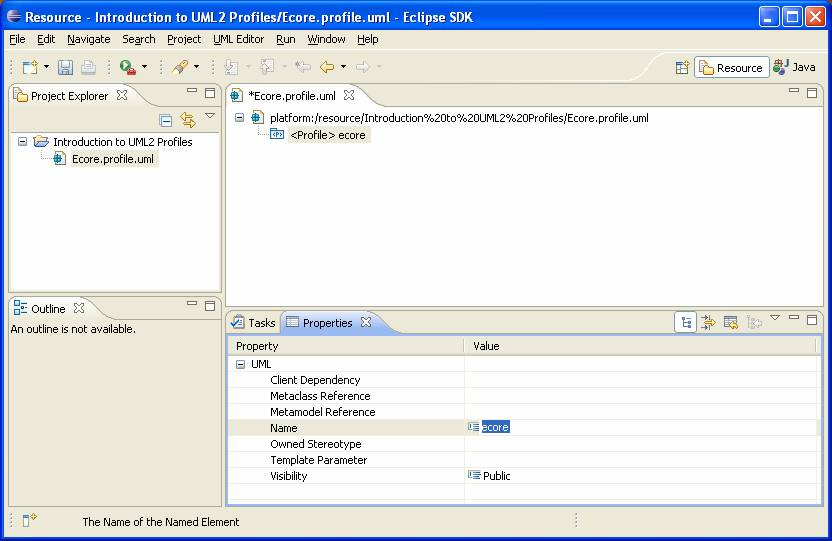<![endif]></p>

<p style='tab-stops:45.8pt 91.6pt 137.4pt 183.2pt 229.0pt 274.8pt 320.6pt 366.4pt 412.2pt 458.0pt 503.8pt 549.6pt 595.4pt 641.2pt 687.0pt 732.8pt'>Let�s
look at how to perform the same task using Java code. The code snippet below
shows a method that programmatically creates and returns a profile with a
specified name.</p>

<pre style='margin-left:9.0pt'><span style='mso-tab-count:1'>���� </span><span
class=GramE>protected</span> static Profile <span class=SpellE>createProfile</span>(String name) {</pre><pre
style='margin-left:9.0pt'><span style='mso-tab-count:
2'>�������� </span>Profile <span class=SpellE>profile</span> = <span
class=SpellE><span class=GramE>UMLFactory.eINSTANCE.createProfile</span></span><span
class=GramE>(</span>);</pre><pre style='margin-left:9.0pt'><span style='mso-tab-count:2'>�������� </span><span class=SpellE><span
class=GramE>profile.setName</span></span><span class=GramE>(</span>name);</pre><pre
style='margin-left:9.0pt'><o:p>&nbsp;</o:p></pre><pre style='margin-left:9.0pt'><span style='mso-tab-count:2'>�������� </span><span class=GramE>out(</span>&quot;Profile '&quot; + <span
class=SpellE>profile.getQualifiedName</span>() + &quot;' created.&quot;);</pre><pre
style='margin-left:9.0pt'><o:p>&nbsp;</o:p></pre><pre style='margin-left:9.0pt'><span style='mso-tab-count:1'>� </span><span style='mso-tab-count:
1'>������� </span><span class=GramE>return</span> profile;</pre><pre
style='margin-left:9.0pt'><span style='mso-tab-count:1'>���� </span>}</pre>

<p style='tab-stops:45.8pt 91.6pt 137.4pt 183.2pt 229.0pt 274.8pt 320.6pt 366.4pt 412.2pt 458.0pt 503.8pt 549.6pt 595.4pt 641.2pt 687.0pt 732.8pt'>First,
we ask the UML factory singleton <span
style='mso-spacerun:yes'>�</span>to create a profile, and we set its <span
class=GramE>name </span>. Then, we output information <span style='mso-spacerun:yes'>�</span>to the user to let them
know that the profile has been successfully created. Finally, we return <span style='mso-spacerun:yes'>�</span>the profile. You�ll notice
most, if not all, of the code snippets in this article will follow this pattern
� create the element (and set some properties on it), inform the user, and
return it.</p>

<p style='tab-stops:45.8pt 91.6pt 137.4pt 183.2pt 229.0pt 274.8pt 320.6pt 366.4pt 412.2pt 458.0pt 503.8pt 549.6pt 595.4pt 641.2pt 687.0pt 732.8pt'>OK,
let�s see this method in action. For example, we could create a profile named �<span
class=SpellE>ecore</span>� as follows:</p>

<p style='margin-left:9.0pt;tab-stops:45.8pt 91.6pt 137.4pt 183.2pt 229.0pt 274.8pt 320.6pt 366.4pt 412.2pt 458.0pt 503.8pt 549.6pt 595.4pt 641.2pt 687.0pt 732.8pt'><span
style='mso-tab-count:2'>������������������������ </span>Profile <span
class=SpellE>ecoreProfile</span> = <span class=SpellE><span class=GramE>createProfile</span></span><span
class=GramE>(</span>&quot;<span class=SpellE>ecore</span>&quot;);</p>

<h3 style='tab-stops:45.8pt 91.6pt 137.4pt 183.2pt 229.0pt 274.8pt 320.6pt 366.4pt 412.2pt 458.0pt 503.8pt 549.6pt 595.4pt 641.2pt 687.0pt 732.8pt'>Importing
Primitive Types</h3>

<p style='tab-stops:45.8pt 91.6pt 137.4pt 183.2pt 229.0pt 274.8pt 320.6pt 366.4pt 412.2pt 458.0pt 503.8pt 549.6pt 595.4pt 641.2pt 687.0pt 732.8pt'>Just
like a class, a stereotype may have properties, which may be referred to as tag
definitions. The types of these properties may be pre-defined in
(domain-specific) libraries referenced by the profile. A profile can be made to
reference primitive types from libraries (such as those provided in the <span
style='font-family:"Courier New"'>org.eclipse.uml2.uml.resources</span>
plug-in) by creating an import relationship between the profile and the
primitive type. To import a primitive type using the UML editor, follow these
steps:</p>

<p style='margin-left:27.5pt;tab-stops:45.8pt 91.6pt 137.4pt 183.2pt 229.0pt 274.8pt 320.6pt 366.4pt 412.2pt 458.0pt 503.8pt 549.6pt 595.4pt 641.2pt 687.0pt 732.8pt'>1)
Select a package (i.e. <b style='mso-bidi-font-weight:normal'>&lt;<span
style='mso-bidi-font-weight:bold'>Profile&gt; <span class=SpellE>ecore</span></span></b>)
in the UML editor.</p>

<p style='margin-left:27.5pt;tab-stops:45.8pt 91.6pt 137.4pt 183.2pt 229.0pt 274.8pt 320.6pt 366.4pt 412.2pt 458.0pt 503.8pt 549.6pt 595.4pt 641.2pt 687.0pt 732.8pt'>2)
Select the <b style='mso-bidi-font-weight:normal'>UML Editor &gt; Package &gt;
Import Type�</b> menu item.</p>

<p style='margin-left:27.5pt;tab-stops:45.8pt 91.6pt 137.4pt 183.2pt 229.0pt 274.8pt 320.6pt 366.4pt 412.2pt 458.0pt 503.8pt 549.6pt 595.4pt 641.2pt 687.0pt 732.8pt'>3)
Choose a primitive type (i.e. <span class=SpellE><b style='mso-bidi-font-weight:
normal'>UMLPrimitiveTypes::Boolean</b></span>)<span class=GramE>,</span> press
the <b style='mso-bidi-font-weight:normal'>Add</b> button, then press the <b
style='mso-bidi-font-weight:normal'>OK</b> button.</p>

<p style='tab-stops:45.8pt 91.6pt 137.4pt 183.2pt 229.0pt 274.8pt 320.6pt 366.4pt 412.2pt 458.0pt 503.8pt 549.6pt 595.4pt 641.2pt 687.0pt 732.8pt'><span
style='mso-spacerun:yes'>�</span>Import the other required primitive type (<span
class=SpellE><b style='mso-bidi-font-weight:normal'>UMLPrimitiveTypes::String</b></span>)
into the <span class=SpellE>Ecore</span> profile using the UML editor.</p>

<p style='tab-stops:45.8pt 91.6pt 137.4pt 183.2pt 229.0pt 274.8pt 320.6pt 366.4pt 412.2pt 458.0pt 503.8pt 549.6pt 595.4pt 641.2pt 687.0pt 732.8pt'>At
this point your workspace should look something like this:</p>

<p style='tab-stops:45.8pt 91.6pt 137.4pt 183.2pt 229.0pt 274.8pt 320.6pt 366.4pt 412.2pt 458.0pt 503.8pt 549.6pt 595.4pt 641.2pt 687.0pt 732.8pt'><!--[if gte vml 1]><v:shape
 id="_x0000_i1131" type="#_x0000_t75" style='width:624pt;height:405.75pt'>
 <v:imagedata src="article_files/image007.png" o:title=""/>
</v:shape><![endif]--><![if !vml]>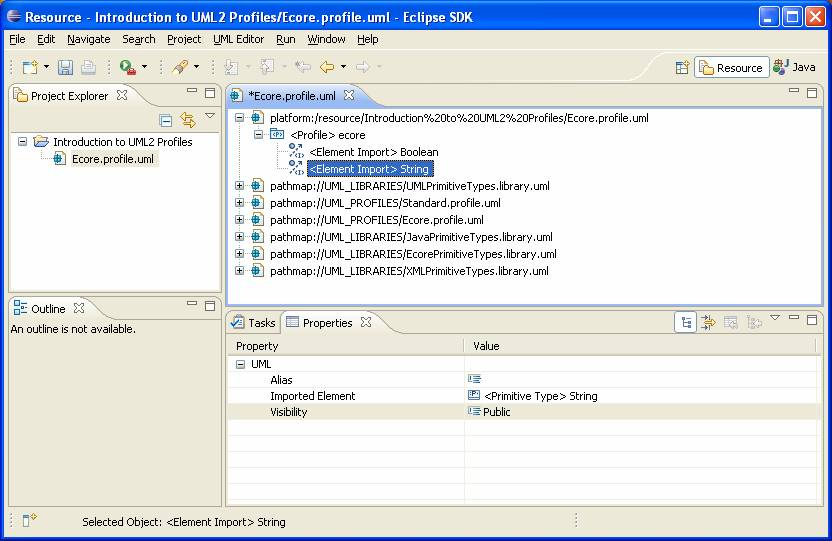<![endif]></p>

<p style='tab-stops:45.8pt 91.6pt 137.4pt 183.2pt 229.0pt 274.8pt 320.6pt 366.4pt 412.2pt 458.0pt 503.8pt 549.6pt 595.4pt 641.2pt 687.0pt 732.8pt'>Let�s
look at how to perform the same task using Java code. The code snippet below
shows a method that programmatically imports the primitive type with a
specified name from the UML primitive <span class=GramE>types</span> library
into a specified package and returns it.</p>

<pre style='margin-left:9.0pt'><span style='mso-tab-count:1'>���� </span><span
class=GramE>protected</span> static <span class=SpellE>PrimitiveType</span> <span
class=SpellE>importPrimitiveType</span>(</pre><pre style='margin-left:9.0pt'><span
style='mso-tab-count:3'>������������������� </span>org.eclipse.uml2.uml.Package package_, String name) {</pre><pre
style='margin-left:9.0pt'><span style='mso-tab-count:
2'>�������� </span>Model <span class=SpellE>umlLibrary</span> = (Model) <span
class=GramE>load(</span>URI</pre><pre style='margin-left:9.0pt'><span
style='mso-tab-count:3'>������������������� </span>.<span class=SpellE><span
class=GramE>createURI</span></span><span class=GramE>(</span><span
class=SpellE>UMLResource.UML_PRIMITIVE_TYPES_LIBRARY_URI</span>));</pre><pre
style='margin-left:9.0pt'><o:p>&nbsp;</o:p></pre><pre style='margin-left:9.0pt'><span style='mso-tab-count:2'>�������� </span><span class=SpellE>PrimitiveType</span> <span
class=SpellE>primitiveType</span> = (<span class=SpellE>PrimitiveType</span>) <span
class=SpellE>umlLibrary</span></pre><pre style='margin-left:9.0pt'><span
style='mso-tab-count:3'>������������������� </span>.<span class=SpellE><span
class=GramE>getOwnedType</span></span><span class=GramE>(</span>name);</pre><pre
style='margin-left:9.0pt'><o:p>&nbsp;</o:p></pre><pre style='margin-left:9.0pt'><span style='mso-tab-count:2'>�������� </span><span class=SpellE>package_.<span
class=GramE>createElementImport</span></span><span class=GramE>(</span><span
class=SpellE>primitiveType</span>);</pre><pre style='margin-left:9.0pt'><o:p>&nbsp;</o:p></pre><pre
style='margin-left:9.0pt'><span style='mso-tab-count:2'>����������� </span><span
class=GramE>out(</span>&quot;Primitive type '&quot; + <span class=SpellE>primitiveType.getQualifiedName</span>()</pre><pre
style='margin-left:9.0pt'><span style='mso-tab-count:3'>������������������� </span>+ &quot;' imported.&quot;);</pre><pre
style='margin-left:9.0pt'><o:p>&nbsp;</o:p></pre><pre style='margin-left:9.0pt'><span
style='mso-tab-count:2'>����������� </span><span class=GramE>return</span> <span
class=SpellE>primitiveType</span>;</pre><pre style='margin-left:9.0pt'><span
style='mso-tab-count:1'>���� </span>}</pre>

<p style='tab-stops:45.8pt 91.6pt 137.4pt 183.2pt 229.0pt 274.8pt 320.6pt 366.4pt 412.2pt 458.0pt 503.8pt 549.6pt 595.4pt 641.2pt 687.0pt 732.8pt'>Here
we load the model library <span
style='mso-spacerun:yes'>�</span>containing the UML primitive types (<span
style='font-family:"Courier New"'>Boolean</span>, <span style='font-family:
"Courier New"'>Integer</span>, <span style='font-family:"Courier New"'>String</span>,
and <span class=SpellE><span style='font-family:"Courier New"'>UnlimitedNatural</span></span>)
using a utility method (described later) and a URI defined on the <span
class=SpellE><span style='font-family:"Courier New"'>UMLResource</span></span>
interface. Next, we retrieve the desired (owned) primitive type from the model
by name <span
style='mso-spacerun:yes'>�</span>using one of the convenience methods defined
in the UML2 API. Finally, we invoke another convenience method <span style='mso-spacerun:yes'>�</span>to create the element
import relationship between the package and the element (with default public
visibility), notify the user, and return the primitive type.</p>

<p style='tab-stops:45.8pt 91.6pt 137.4pt 183.2pt 229.0pt 274.8pt 320.6pt 366.4pt 412.2pt 458.0pt 503.8pt 549.6pt 595.4pt 641.2pt 687.0pt 732.8pt'><span
style='mso-spacerun:yes'>�</span>The UML resources plug-in (<span
style='font-family:"Courier New"'>org.eclipse.uml2.uml.resources</span>)
provides several model libraries (which by convention have a <code>.<span
class=SpellE>library.uml</span></code> file extension) that contain commonly
used primitive types, such as those defined by Java and <span class=SpellE>Ecore</span>
(in addition to those defined by UML� itself). These libraries can be accessed
using <span class=SpellE>URIs</span> defined on the <span class=SpellE><span
style='font-family:"Courier New"'>UMLResource</span></span> interface, as shown
above.</p>

<p style='tab-stops:45.8pt 91.6pt 137.4pt 183.2pt 229.0pt 274.8pt 320.6pt 366.4pt 412.2pt 458.0pt 503.8pt 549.6pt 595.4pt 641.2pt 687.0pt 732.8pt'><span
style='mso-spacerun:yes'>�</span>In UML2, a method of the form <code>get&lt;feature
name<span class=GramE>&gt;(</span>String)</code> exists for every feature that
can contain or reference named elements. In this case, the package has a
feature (<span class=SpellE><code>ownedType</code></span>) that can contain
types, so we pass the unqualified name of the type we are looking for to the <span
class=SpellE><span class=GramE><code>getOwnedType</code></span></span><span
class=GramE><code>(</code></span><code>String)</code> convenience method.
Behind the scenes, the package will iterate over all of its owned types and
return the first one that it finds that has the specified (unqualified) name.</p>

<p style='tab-stops:45.8pt 91.6pt 137.4pt 183.2pt 229.0pt 274.8pt 320.6pt 366.4pt 412.2pt 458.0pt 503.8pt 549.6pt 595.4pt 641.2pt 687.0pt 732.8pt'>OK,
let�s see this method in action. For example, we could import the primitive
type named �Boolean� into profile �<span class=SpellE>ecore</span>� as follows:</p>

<pre style='margin-left:8.5pt'><span style='mso-tab-count:2'>����������� </span><span
class=SpellE>PrimitiveType</span> <span class=SpellE>booleanPrimitiveType</span> = <span
class=SpellE><span class=GramE>importPrimitiveType</span></span><span
class=GramE>(</span><span class=SpellE>ecoreProfile</span>,</pre><pre
style='margin-left:8.5pt'><span style='mso-tab-count:3'>������������������� </span>&quot;Boolean&quot;);</pre>

<p style='tab-stops:45.8pt 91.6pt 137.4pt 183.2pt 229.0pt 274.8pt 320.6pt 366.4pt 412.2pt 458.0pt 503.8pt 549.6pt 595.4pt 641.2pt 687.0pt 732.8pt'><span
style='mso-spacerun:yes'>�</span>Write code to programmatically import the
other required primitive type (i.e. �String�) into the <span class=SpellE>Ecore</span>
profile.</p>

<h3 style='tab-stops:45.8pt 91.6pt 137.4pt 183.2pt 229.0pt 274.8pt 320.6pt 366.4pt 412.2pt 458.0pt 503.8pt 549.6pt 595.4pt 641.2pt 687.0pt 732.8pt'>Creating
Enumerations</h3>

<p style='tab-stops:45.8pt 91.6pt 137.4pt 183.2pt 229.0pt 274.8pt 320.6pt 366.4pt 412.2pt 458.0pt 503.8pt 549.6pt 595.4pt 641.2pt 687.0pt 732.8pt'>As
with packages, profiles can contain enumerations. An enumeration is a kind of
data type whose instances may be any of a number of user-defined enumeration
literals. To create an enumeration using the UML editor, follow these steps:</p>

<p style='margin-left:27.5pt;tab-stops:45.8pt 91.6pt 137.4pt 183.2pt 229.0pt 274.8pt 320.6pt 366.4pt 412.2pt 458.0pt 503.8pt 549.6pt 595.4pt 641.2pt 687.0pt 732.8pt'>1)
Select a profile (i.e. <b style='mso-bidi-font-weight:normal'>&lt;<span
style='mso-bidi-font-weight:bold'>Profile&gt; <span class=SpellE>ecore</span></span></b>)
in the UML editor.</p>

<p style='margin-left:27.5pt;tab-stops:45.8pt 91.6pt 137.4pt 183.2pt 229.0pt 274.8pt 320.6pt 366.4pt 412.2pt 458.0pt 503.8pt 549.6pt 595.4pt 641.2pt 687.0pt 732.8pt'>2)
Right-click and select the <b>New Child &gt; Packaged Element &gt; Enumeration</b>
option from the context menu.</p>

<p style='margin-left:27.5pt;tab-stops:45.8pt 91.6pt 137.4pt 183.2pt 229.0pt 274.8pt 320.6pt 366.4pt 412.2pt 458.0pt 503.8pt 549.6pt 595.4pt 641.2pt 687.0pt 732.8pt'>3)
Enter a value (i.e. �<span class=SpellE>VisibilityKind</span>�) for the <b>Name</b>
property in the <b>Properties</b> view.</p>

<p style='tab-stops:45.8pt 91.6pt 137.4pt 183.2pt 229.0pt 274.8pt 320.6pt 366.4pt 412.2pt 458.0pt 503.8pt 549.6pt 595.4pt 641.2pt 687.0pt 732.8pt'><span
style='mso-spacerun:yes'>�</span>Create the other enumeration (i.e. �<span
class=SpellE>FeatureKind</span>�) for the <span class=SpellE>Ecore</span>
profile using the UML editor.</p>

<p style='tab-stops:45.8pt 91.6pt 137.4pt 183.2pt 229.0pt 274.8pt 320.6pt 366.4pt 412.2pt 458.0pt 503.8pt 549.6pt 595.4pt 641.2pt 687.0pt 732.8pt'>At
this point your workspace should look something like this:</p>

<p style='tab-stops:45.8pt 91.6pt 137.4pt 183.2pt 229.0pt 274.8pt 320.6pt 366.4pt 412.2pt 458.0pt 503.8pt 549.6pt 595.4pt 641.2pt 687.0pt 732.8pt'><!--[if gte vml 1]><v:shape
 id="_x0000_i1132" type="#_x0000_t75" style='width:624pt;height:405.75pt'>
 <v:imagedata src="article_files/image009.png" o:title=""/>
</v:shape><![endif]--><![if !vml]>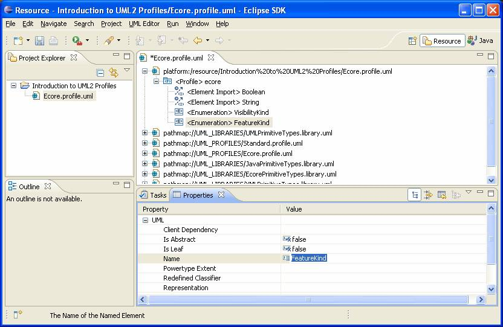<![endif]></p>

<p style='tab-stops:45.8pt 91.6pt 137.4pt 183.2pt 229.0pt 274.8pt 320.6pt 366.4pt 412.2pt 458.0pt 503.8pt 549.6pt 595.4pt 641.2pt 687.0pt 732.8pt'>Let�s
look at how to perform the same task using Java code. The code snippet below
(from the <span style='font-family:"Courier New"'>GettingStartedWithUML2</span>
class) shows a method that programmatically creates and returns an enumeration
with a specified name in a specified package.</p>

<pre style='margin-left:9.0pt'><span style='mso-tab-count:1'>���� </span><span
class=GramE>protected</span> static Enumeration <span class=SpellE>createEnumeration</span>(</pre><pre
style='margin-left:9.0pt'><span style='mso-tab-count:3'>������������������� </span>org.eclipse.uml2.uml.Package package_, String name) {</pre><pre
style='margin-left:9.0pt'><span style='mso-tab-count:
2'>�������� </span>Enumeration <span class=SpellE>enumeration</span> = (Enumeration) package_</pre><pre
style='margin-left:9.0pt'><span style='mso-tab-count:3'>������������������� </span>.<span
class=SpellE><span class=GramE>createOwnedEnumeraton</span></span><span
class=GramE>(</span>name);</pre><pre style='margin-left:9.0pt'><o:p>&nbsp;</o:p></pre><pre
style='margin-left:9.0pt'><span style='mso-tab-count:2'>����������� </span><span
class=GramE>out(</span>&quot;Enumeration '&quot; + <span class=SpellE>enumeration.getQualifiedName</span>() + &quot;' created.&quot;);</pre><pre
style='margin-left:9.0pt'><o:p>&nbsp;</o:p></pre><pre style='margin-left:9.0pt'><span
style='mso-tab-count:2'>����������� </span><span class=GramE>return</span> enumeration;</pre><pre
style='margin-left:9.0pt'><span style='mso-tab-count:1'>���� </span>}</pre>

<p style='tab-stops:45.8pt 91.6pt 137.4pt 183.2pt 229.0pt 274.8pt 320.6pt 366.4pt 412.2pt 458.0pt 503.8pt 549.6pt 595.4pt 641.2pt 687.0pt 732.8pt'>Here
we call the <span class=SpellE><span class=GramE><code>createOwnedEnumeration</code></span></span><span
class=GramE><code>(</code></span><code>String)</code> convenience factory
method <span
style='mso-spacerun:yes'>�</span>to ask the package to create a primitive type with
the specified name as one of its packaged elements.</p>

<p style='tab-stops:45.8pt 91.6pt 137.4pt 183.2pt 229.0pt 274.8pt 320.6pt 366.4pt 412.2pt 458.0pt 503.8pt 549.6pt 595.4pt 641.2pt 687.0pt 732.8pt'>OK,
let�s see this method in action. For example, we could create an enumeration
named �<span class=SpellE>VisibilityKind</span>� in profile �<span
class=SpellE>ecore</span>� as follows:</p>

<pre style='margin-left:9.0pt'><span style='mso-tab-count:2'>����������� </span>Enumeration <span
class=SpellE>visibilityKindEnumeration</span> = GettingStartedWithUML2</pre><pre
style='margin-left:9.0pt'><span style='mso-tab-count:3'>������������������� </span>.<span
class=SpellE><span class=GramE>createEnumeration</span></span><span
class=GramE>(</span><span class=SpellE>ecoreProfile</span>, &quot;<span
class=SpellE>VisibilityKind</span>&quot;);</pre>

<p style='tab-stops:45.8pt 91.6pt 137.4pt 183.2pt 229.0pt 274.8pt 320.6pt 366.4pt 412.2pt 458.0pt 503.8pt 549.6pt 595.4pt 641.2pt 687.0pt 732.8pt'><span
style='mso-spacerun:yes'>�</span>Write code to programmatically create the
other enumeration (i.e. �<span class=SpellE>FeatureKind</span>�) for the <span
class=SpellE>Ecore</span> profile.</p>

<h3 style='tab-stops:45.8pt 91.6pt 137.4pt 183.2pt 229.0pt 274.8pt 320.6pt 366.4pt 412.2pt 458.0pt 503.8pt 549.6pt 595.4pt 641.2pt 687.0pt 732.8pt'>Creating
Enumeration Literals</h3>

<p style='tab-stops:45.8pt 91.6pt 137.4pt 183.2pt 229.0pt 274.8pt 320.6pt 366.4pt 412.2pt 458.0pt 503.8pt 549.6pt 595.4pt 641.2pt 687.0pt 732.8pt'>An
enumeration literal is a user-defined data value for an enumeration. To create
an enumeration literal using the UML editor, follow these steps:</p>

<p style='margin-left:27.5pt;tab-stops:45.8pt 91.6pt 137.4pt 183.2pt 229.0pt 274.8pt 320.6pt 366.4pt 412.2pt 458.0pt 503.8pt 549.6pt 595.4pt 641.2pt 687.0pt 732.8pt'>1)
Select an enumeration (i.e. <b style='mso-bidi-font-weight:normal'>&lt;<span
style='mso-bidi-font-weight:bold'>Enumeration&gt; <span class=SpellE>VisibilityKind</span></span></b>)
in the UML editor.</p>

<p style='margin-left:27.5pt;tab-stops:45.8pt 91.6pt 137.4pt 183.2pt 229.0pt 274.8pt 320.6pt 366.4pt 412.2pt 458.0pt 503.8pt 549.6pt 595.4pt 641.2pt 687.0pt 732.8pt'>2)
Right-click and select the <b>New Child &gt; Owned Literal &gt; Enumeration
Literal</b> option from the context menu.</p>

<p style='margin-left:27.5pt;tab-stops:45.8pt 91.6pt 137.4pt 183.2pt 229.0pt 274.8pt 320.6pt 366.4pt 412.2pt 458.0pt 503.8pt 549.6pt 595.4pt 641.2pt 687.0pt 732.8pt'>3)
Enter a value (i.e. �Unspecified�) for the <b>Name</b> property in the <b>Properties</b>
view.</p>

<p style='tab-stops:45.8pt 91.6pt 137.4pt 183.2pt 229.0pt 274.8pt 320.6pt 366.4pt 412.2pt 458.0pt 503.8pt 549.6pt 595.4pt 641.2pt 687.0pt 732.8pt'><span
style='mso-spacerun:yes'>�</span>Create the remaining enumeration literals for
the <span class=SpellE>Ecore</span> profile (i.e. �None�, �<span class=SpellE>ReadOnly</span>�,
�<span class=SpellE>ReadWrite</span>�, �<span class=SpellE>ReadOnlyUnsettable</span>�,
and �<span class=SpellE>ReadWriteUnsettable</span>� for <b style='mso-bidi-font-weight:
normal'>&lt;<span style='mso-bidi-font-weight:bold'>Enumeration&gt; <span
class=SpellE>VisibilityKind</span></span></b>; �Unspecified�, �Simple�,
�Attribute�, �Element�, �<span class=SpellE>AttributeWildcard</span>�, �<span
class=SpellE>ElementWildcard</span>�, and �Group� for <b style='mso-bidi-font-weight:
normal'>&lt;<span style='mso-bidi-font-weight:bold'>Enumeration <span
class=SpellE>FeatureKind</span>&gt;</span></b>) using the UML editor.</p>

<p style='tab-stops:45.8pt 91.6pt 137.4pt 183.2pt 229.0pt 274.8pt 320.6pt 366.4pt 412.2pt 458.0pt 503.8pt 549.6pt 595.4pt 641.2pt 687.0pt 732.8pt'>At
this point your workspace should look something like this:</p>

<p style='tab-stops:45.8pt 91.6pt 137.4pt 183.2pt 229.0pt 274.8pt 320.6pt 366.4pt 412.2pt 458.0pt 503.8pt 549.6pt 595.4pt 641.2pt 687.0pt 732.8pt'><!--[if gte vml 1]><v:shape
 id="_x0000_i1133" type="#_x0000_t75" style='width:696pt;height:607.5pt'>
 <v:imagedata src="article_files/image011.png" o:title=""/>
</v:shape><![endif]--><![if !vml]>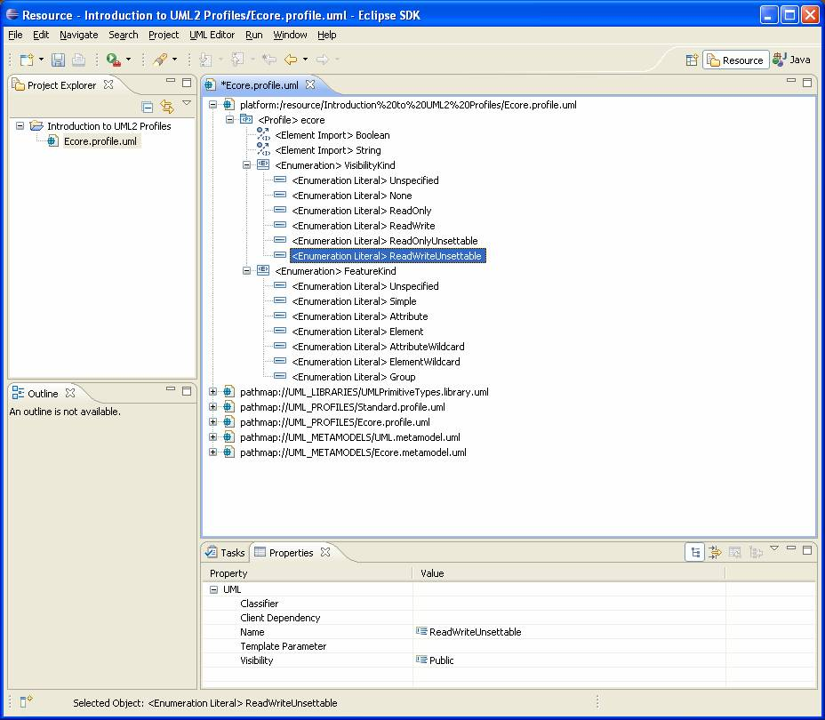<![endif]></p>

<p style='tab-stops:45.8pt 91.6pt 137.4pt 183.2pt 229.0pt 274.8pt 320.6pt 366.4pt 412.2pt 458.0pt 503.8pt 549.6pt 595.4pt 641.2pt 687.0pt 732.8pt'>Let�s
look at how to perform the same task using Java code. The code snippet below
(from the <span style='font-family:"Courier New"'>GettingStartedWithUML2</span>
class) shows a method that programmatically creates and returns an enumeration
literal with a specified name in a specified enumeration.</p>

<pre style='margin-left:9.0pt'><span style='mso-tab-count:1'>���� </span><span
class=GramE>protected</span> static <span class=SpellE>EnumerationLiteral</span> <span
class=SpellE>createEnumerationLiteral</span>(</pre><pre style='margin-left:
9.0pt'><span style='mso-tab-count:3'>������������������� </span>Enumeration <span
class=SpellE>enumeration</span>, String name) {</pre><pre style='margin-left:
9.0pt'><span style='mso-tab-count:
2'>�������� </span><span class=SpellE>EnumerationLiteral</span> <span
class=SpellE>enumerationLiteral</span> = enumeration</pre><pre
style='margin-left:9.0pt'><span style='mso-tab-count:3'>������������������� </span>.<span
class=SpellE><span class=GramE>createOwnedLiteral</span></span><span
class=GramE>(</span>name);</pre><pre style='margin-left:9.0pt'><o:p>&nbsp;</o:p></pre><pre
style='margin-left:9.0pt'><span style='mso-tab-count:2'>����������� </span><span
class=GramE>out(</span>&quot;Enumeration literal '&quot; + <span class=SpellE>enumerationLiteral.getQualifiedName</span>()</pre><pre
style='margin-left:9.0pt'><span style='mso-tab-count:3'>������������������� </span>+ &quot;' created.&quot;);</pre><pre
style='margin-left:9.0pt'><o:p>&nbsp;</o:p></pre><pre style='margin-left:9.0pt'><span
style='mso-tab-count:2'>����������� </span><span class=GramE>return</span> <span
class=SpellE>enumerationLiteral</span>;</pre><pre style='margin-left:9.0pt'><span
style='mso-tab-count:1'>���� </span>}</pre>

<p style='tab-stops:45.8pt 91.6pt 137.4pt 183.2pt 229.0pt 274.8pt 320.6pt 366.4pt 412.2pt 458.0pt 503.8pt 549.6pt 595.4pt 641.2pt 687.0pt 732.8pt'>Here
we call the <span class=SpellE><span class=GramE><code>createOwnedLiteral</code></span></span><span
class=GramE><code>(</code></span><code>String)</code> convenience factory
method <span
style='mso-spacerun:yes'>�</span>to ask the enumeration to create an
enumeration literal with the specified name as one of its owned literals.</p>

<p style='tab-stops:45.8pt 91.6pt 137.4pt 183.2pt 229.0pt 274.8pt 320.6pt 366.4pt 412.2pt 458.0pt 503.8pt 549.6pt 595.4pt 641.2pt 687.0pt 732.8pt'>OK,
let�s see this method in action. For example, we could create an enumeration
literal named �Unspecified� in enumeration �<span class=SpellE>VisibilityKind</span>�
as follows:</p>

<pre style='margin-left:8.5pt'><span style='mso-tab-count:2'>����������� </span><span
class=GramE>GettingStartedWithUML2.createEnumerationLiteral(</span></pre><pre
style='margin-left:8.5pt'><span style='mso-tab-count:3'>������������������� </span><span
class=SpellE><span class=GramE>visibilityKindEnumeration</span></span>, &quot;Unspecified&quot;);<span
style='mso-tab-count:2'>����������� </span></pre>

<p style='tab-stops:45.8pt 91.6pt 137.4pt 183.2pt 229.0pt 274.8pt 320.6pt 366.4pt 412.2pt 458.0pt 503.8pt 549.6pt 595.4pt 641.2pt 687.0pt 732.8pt'><span
style='mso-spacerun:yes'>�</span>Write code to programmatically create the
remaining enumeration literals (i.e. �None�, �<span class=SpellE>ReadOnly</span>�,
�<span class=SpellE>ReadWrite</span>�, �<span class=SpellE>ReadOnlyUnsettable</span>�,
and �<span class=SpellE>ReadWriteUnsettable</span>� in enumeration �<span
class=SpellE>VisibilityKind</span>�; �Unspecified�, �Simple�, �Attribute�,
�Element�, �<span class=SpellE>AttributeWildcard</span>�, �<span class=SpellE>ElementWildcard</span>�,
and �Group� in enumeration �<span class=SpellE>FeatureKind</span>�) for the <span
class=SpellE>Ecore</span> profile.</p>

<h3 style='tab-stops:45.8pt 91.6pt 137.4pt 183.2pt 229.0pt 274.8pt 320.6pt 366.4pt 412.2pt 458.0pt 503.8pt 549.6pt 595.4pt 641.2pt 687.0pt 732.8pt'>Creating
Stereotypes</h3>

<p style='tab-stops:45.8pt 91.6pt 137.4pt 183.2pt 229.0pt 274.8pt 320.6pt 366.4pt 412.2pt 458.0pt 503.8pt 549.6pt 595.4pt 641.2pt 687.0pt 732.8pt'>A
stereotype defines how an existing <span class=SpellE>metaclass</span> may be
extended, and enables the use of platform- or domain-specific terminology or
notation in place of, or in addition to, the ones used for the extended <span
class=SpellE>metaclass</span>. Each stereotype may extend one or more classes
through extensions as part of a profile. To create a stereotype using the UML
editor, follow these steps:</p>

<p style='margin-left:27.5pt;tab-stops:45.8pt 91.6pt 137.4pt 183.2pt 229.0pt 274.8pt 320.6pt 366.4pt 412.2pt 458.0pt 503.8pt 549.6pt 595.4pt 641.2pt 687.0pt 732.8pt'>1)
Select a profile (i.e. <b style='mso-bidi-font-weight:normal'>&lt;<span
style='mso-bidi-font-weight:bold'>Profile&gt; <span class=SpellE>ecore</span></span></b>)
in the UML editor.</p>

<p style='margin-left:27.5pt;tab-stops:45.8pt 91.6pt 137.4pt 183.2pt 229.0pt 274.8pt 320.6pt 366.4pt 412.2pt 458.0pt 503.8pt 549.6pt 595.4pt 641.2pt 687.0pt 732.8pt'>2)
Right-click and select the <b>New Child &gt; Packaged Element &gt; Stereotype</b>
option from the context menu.</p>

<p style='margin-left:27.5pt;tab-stops:45.8pt 91.6pt 137.4pt 183.2pt 229.0pt 274.8pt 320.6pt 366.4pt 412.2pt 458.0pt 503.8pt 549.6pt 595.4pt 641.2pt 687.0pt 732.8pt'>3)
Enter a value (i.e. �<span class=SpellE>EStructuralFeature</span>�) for the <b>Name</b>
property in the <b>Properties</b> view.</p>

<p style='margin-left:27.5pt;tab-stops:45.8pt 91.6pt 137.4pt 183.2pt 229.0pt 274.8pt 320.6pt 366.4pt 412.2pt 458.0pt 503.8pt 549.6pt 595.4pt 641.2pt 687.0pt 732.8pt'>4)
<span class=GramE>Select</span> a value (i.e. <b style='mso-bidi-font-weight:
normal'>true</b>) for the <b style='mso-bidi-font-weight:normal'>Is Abstract</b>
property in the <b style='mso-bidi-font-weight:normal'>Properties</b> view.</p>

<p style='tab-stops:45.8pt 91.6pt 137.4pt 183.2pt 229.0pt 274.8pt 320.6pt 366.4pt 412.2pt 458.0pt 503.8pt 549.6pt 595.4pt 641.2pt 687.0pt 732.8pt'><span
style='mso-spacerun:yes'>�</span>Create the remaining stereotypes for the <span
class=SpellE>Ecore</span> profile (i.e. �<span class=SpellE>EAttribute</span>�
and �<span class=SpellE>EReference</span>�) using the UML editor.</p>

<p style='tab-stops:45.8pt 91.6pt 137.4pt 183.2pt 229.0pt 274.8pt 320.6pt 366.4pt 412.2pt 458.0pt 503.8pt 549.6pt 595.4pt 641.2pt 687.0pt 732.8pt'>At
this point your workspace should look something like this:</p>

<p style='tab-stops:45.8pt 91.6pt 137.4pt 183.2pt 229.0pt 274.8pt 320.6pt 366.4pt 412.2pt 458.0pt 503.8pt 549.6pt 595.4pt 641.2pt 687.0pt 732.8pt'><!--[if gte vml 1]><v:shape
 id="_x0000_i1134" type="#_x0000_t75" style='width:696pt;height:607.5pt'>
 <v:imagedata src="article_files/image013.png" o:title=""/>
</v:shape><![endif]--><![if !vml]>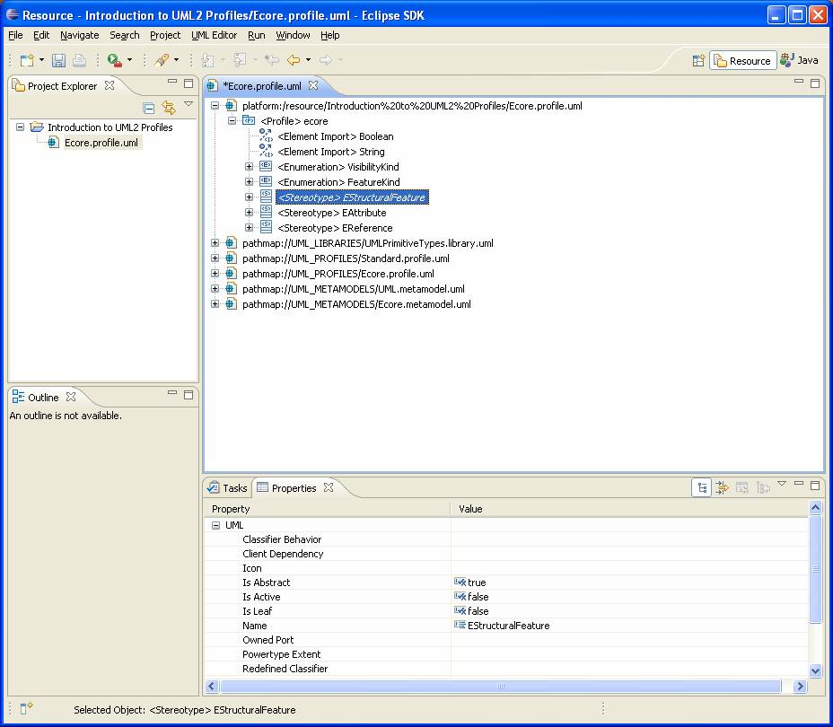<![endif]></p>

<p style='tab-stops:45.8pt 91.6pt 137.4pt 183.2pt 229.0pt 274.8pt 320.6pt 366.4pt 412.2pt 458.0pt 503.8pt 549.6pt 595.4pt 641.2pt 687.0pt 732.8pt'>Let�s
look at how to perform the same task using Java code. The code snippet below
shows a method that programmatically creates and returns <span class=GramE>a(</span>n)
(abstract) stereotype with a specified name in a specified profile.</p>

<pre style='margin-left:9.0pt'><span style='mso-tab-count:1'>���� </span><span
class=GramE>protected</span> static Stereotype <span class=SpellE>createStereotype</span>(Profile <span
class=SpellE>profile</span>, String name,</pre><pre style='margin-left:9.0pt'><span
style='mso-tab-count:3'>������������������� </span><span class=SpellE><span
class=GramE>boolean</span></span> <span class=SpellE>isAbstract</span>) {</pre><pre
style='margin-left:9.0pt'><span style='mso-tab-count:
2'>�������� </span>Stereotype <span class=SpellE>stereotype</span> = <span
class=SpellE><span class=GramE>profile.createOwnedStereotype</span></span><span
class=GramE>(</span>name, <span class=SpellE>isAbstract</span>);</pre><pre
style='margin-left:9.0pt'><o:p>&nbsp;</o:p></pre><pre style='margin-left:9.0pt'><span
style='mso-tab-count:2'>����������� </span><span class=GramE>out(</span>&quot;Stereotype '&quot; + <span
class=SpellE>stereotype.getQualifiedName</span>() + &quot;' created.&quot;);</pre><pre
style='margin-left:9.0pt'><o:p>&nbsp;</o:p></pre><pre style='margin-left:9.0pt'><span
style='mso-tab-count:2'>����������� </span><span class=GramE>return</span> stereotype;</pre><pre
style='margin-left:9.0pt'><span style='mso-tab-count:1'>���� </span>}</pre>

<p style='tab-stops:45.8pt 91.6pt 137.4pt 183.2pt 229.0pt 274.8pt 320.6pt 366.4pt 412.2pt 458.0pt 503.8pt 549.6pt 595.4pt 641.2pt 687.0pt 732.8pt'>Here
we call the <span class=SpellE><span class=GramE><code>createOwnedStereotype</code></span></span><span
class=GramE><code>(</code></span><code>String, <span class=SpellE>boolean</span>)</code>
convenience factory method <span
style='mso-spacerun:yes'>�</span>to ask the profile to create a stereotype with
the specified name as one of its owned members, and set the <span class=SpellE><code>isAbstract</code></span>
attribute of the stereotype based on the specified <span class=SpellE><code>boolean</code></span>
argument.</p>

<p style='tab-stops:45.8pt 91.6pt 137.4pt 183.2pt 229.0pt 274.8pt 320.6pt 366.4pt 412.2pt 458.0pt 503.8pt 549.6pt 595.4pt 641.2pt 687.0pt 732.8pt'>OK,
let�s see this method in action. For example, we could create an abstract
stereotype named �<span class=SpellE>EStructuralFeature</span>� in profile �<span
class=SpellE>ecore</span>� as follows:</p>

<pre style='margin-left:9.0pt'><span style='mso-tab-count:2'>����������� </span>Stereotype <span
class=SpellE>eStructuralFeatureStereotype</span> = <span class=SpellE><span
class=GramE>createStereotype</span></span><span class=GramE>(</span></pre><pre
style='margin-left:9.0pt'><span style='mso-tab-count:3'>������������������� </span><span
class=SpellE><span class=GramE>ecoreProfile</span></span>, &quot;<span
class=SpellE>EStructuralFeature</span>&quot;, true);</pre>

<p style='tab-stops:45.8pt 91.6pt 137.4pt 183.2pt 229.0pt 274.8pt 320.6pt 366.4pt 412.2pt 458.0pt 503.8pt 549.6pt 595.4pt 641.2pt 687.0pt 732.8pt'><span
style='mso-spacerun:yes'>�</span>Write code to programmatically create the
remaining (non-abstract) stereotypes (i.e. �<span class=SpellE>EAttribute</span>�
and �<span class=SpellE>EReference</span>�) for the <span class=SpellE>Ecore</span>
profile.</p>

<h3 style='tab-stops:45.8pt 91.6pt 137.4pt 183.2pt 229.0pt 274.8pt 320.6pt 366.4pt 412.2pt 458.0pt 503.8pt 549.6pt 595.4pt 641.2pt 687.0pt 732.8pt'>Creating
Stereotype Generalizations</h3>

<p style='tab-stops:45.8pt 91.6pt 137.4pt 183.2pt 229.0pt 274.8pt 320.6pt 366.4pt 412.2pt 458.0pt 503.8pt 549.6pt 595.4pt 641.2pt 687.0pt 732.8pt'>Just
like classes, stereotypes may be involved in generalizations. A generalization
is a taxonomic relationship between a specific classifier and a more general
classifier whereby each instance of the specific classifier is also an indirect
instance of, and inherits the features of, the general classifier. To create a
stereotype generalization using the UML editor, follow these steps:</p>

<p style='margin-left:27.5pt;tab-stops:45.8pt 91.6pt 137.4pt 183.2pt 229.0pt 274.8pt 320.6pt 366.4pt 412.2pt 458.0pt 503.8pt 549.6pt 595.4pt 641.2pt 687.0pt 732.8pt'>1)
Select a stereotype (i.e. <b style='mso-bidi-font-weight:normal'>&lt;<span
style='mso-bidi-font-weight:bold'>Stereotype&gt; <span class=SpellE>EAttribute</span></span></b>)
in the UML editor.</p>

<p style='margin-left:27.5pt;tab-stops:45.8pt 91.6pt 137.4pt 183.2pt 229.0pt 274.8pt 320.6pt 366.4pt 412.2pt 458.0pt 503.8pt 549.6pt 595.4pt 641.2pt 687.0pt 732.8pt'>2)
Right-click and select the <b>New Child &gt; Generalization &gt; Generalization</b>
option from the context menu.</p>

<p style='margin-left:27.5pt;tab-stops:45.8pt 91.6pt 137.4pt 183.2pt 229.0pt 274.8pt 320.6pt 366.4pt 412.2pt 458.0pt 503.8pt 549.6pt 595.4pt 641.2pt 687.0pt 732.8pt'>3)
Select a value (i.e. <span class=SpellE><b>ecore::EStructuralFeature</b></span>)
for the <b>General</b> property in the <b>Properties</b> view.</p>

<p style='tab-stops:45.8pt 91.6pt 137.4pt 183.2pt 229.0pt 274.8pt 320.6pt 366.4pt 412.2pt 458.0pt 503.8pt 549.6pt 595.4pt 641.2pt 687.0pt 732.8pt'><span
style='mso-spacerun:yes'>�</span>Create the other generalization (i.e. between <span
class=SpellE><b style='mso-bidi-font-weight:normal'>EReference</b></span> and <span
class=SpellE><b style='mso-bidi-font-weight:normal'>EStructuralFeature</b></span>)
for the <span class=SpellE>Ecore</span> profile using the UML editor.</p>

<p style='tab-stops:45.8pt 91.6pt 137.4pt 183.2pt 229.0pt 274.8pt 320.6pt 366.4pt 412.2pt 458.0pt 503.8pt 549.6pt 595.4pt 641.2pt 687.0pt 732.8pt'><span
style='mso-spacerun:yes'>�</span>Be sure to pick the stereotype (the first <span
class=SpellE><b style='mso-bidi-font-weight:normal'>ecore::EStructuralFeature</b></span>
item) and not the class (it should show up in <b style='mso-bidi-font-weight:
normal'>Properties</b> view as <b style='mso-bidi-font-weight:normal'>&lt;Stereotype&gt;
<span class=SpellE>EStructuralFeature</span></b>, not <b style='mso-bidi-font-weight:
normal'>&lt;Class&gt; <span class=SpellE>EStructuralFeature</span></b>), which
comes from the <span class=SpellE>Ecore</span> <span class=SpellE>metamodel</span>.</p>

<p style='tab-stops:45.8pt 91.6pt 137.4pt 183.2pt 229.0pt 274.8pt 320.6pt 366.4pt 412.2pt 458.0pt 503.8pt 549.6pt 595.4pt 641.2pt 687.0pt 732.8pt'>At
this point your workspace should look something like this:</p>

<p style='tab-stops:45.8pt 91.6pt 137.4pt 183.2pt 229.0pt 274.8pt 320.6pt 366.4pt 412.2pt 458.0pt 503.8pt 549.6pt 595.4pt 641.2pt 687.0pt 732.8pt'><!--[if gte vml 1]><v:shape
 id="_x0000_i1135" type="#_x0000_t75" style='width:696pt;height:607.5pt'>
 <v:imagedata src="article_files/image015.png" o:title=""/>
</v:shape><![endif]--><![if !vml]>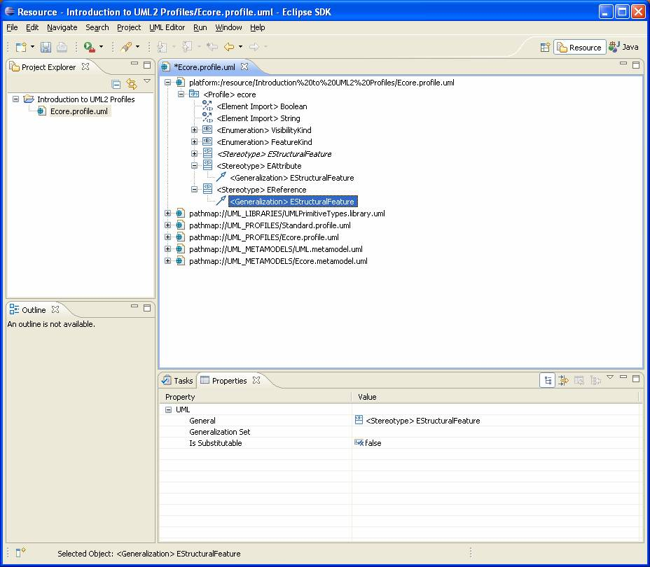<![endif]></p>

<p style='tab-stops:45.8pt 91.6pt 137.4pt 183.2pt 229.0pt 274.8pt 320.6pt 366.4pt 412.2pt 458.0pt 503.8pt 549.6pt 595.4pt 641.2pt 687.0pt 732.8pt'>Let�s
look at how to perform the same task using Java code. The code snippet below
(from the <span style='font-family:"Courier New"'>GettingStartedWithUML2</span>
class) shows a method that programmatically creates and returns generalization
between specified specific and general classifiers.</p>

<pre style='margin-left:9.0pt'><span style='mso-tab-count:1'>���� </span><span
class=GramE>protected</span> static Generalization <span class=SpellE>createGeneralization</span>(</pre><pre
style='margin-left:9.0pt'><span style='mso-tab-count:3'>������������������� </span>Classifier <span
class=SpellE>specificClassifier</span>, Classifier <span class=SpellE>generalClassifier</span>) {</pre><pre
style='margin-left:9.0pt'><span style='mso-tab-count:2'>����������� </span>Generalization <span
class=SpellE>generalization</span> = <span class=SpellE>specificClassifier</span></pre><pre
style='margin-left:9.0pt'><span style='mso-tab-count:
3'>���������������� </span>.<span class=SpellE><span class=GramE>createGeneralization</span></span><span
class=GramE>(</span><span class=SpellE>generalClassifier</span>);</pre><pre
style='margin-left:9.0pt'><o:p>&nbsp;</o:p></pre><pre style='margin-left:9.0pt'><span
style='mso-tab-count:2'>����������� </span><span class=GramE>out(</span>&quot;Generalization &quot; + <span
class=SpellE>specificClassifier.getQualifiedName</span>() + &quot; -&gt;&gt; &quot;</pre><pre
style='margin-left:9.0pt'><span style='mso-tab-count:3'>������������������� </span>+ <span
class=SpellE><span class=GramE>generalClassifier.getQualifiedName</span></span><span
class=GramE>(</span>) + &quot; created.&quot;);</pre><pre style='margin-left:
9.0pt'><o:p>&nbsp;</o:p></pre><pre style='margin-left:9.0pt'><span
style='mso-tab-count:2'>����������� </span><span class=GramE>return</span> generalization;</pre><pre
style='margin-left:9.0pt'><span style='mso-tab-count:1'>���� </span>}</pre>

<p style='tab-stops:45.8pt 91.6pt 137.4pt 183.2pt 229.0pt 274.8pt 320.6pt 366.4pt 412.2pt 458.0pt 503.8pt 549.6pt 595.4pt 641.2pt 687.0pt 732.8pt'>Here
we call a convenience factory method on the specific classifier that creates a
generalization <span
style='mso-spacerun:yes'>�</span>as one of its children and sets the general
classifier to the specified argument.</p>

<p style='tab-stops:45.8pt 91.6pt 137.4pt 183.2pt 229.0pt 274.8pt 320.6pt 366.4pt 412.2pt 458.0pt 503.8pt 549.6pt 595.4pt 641.2pt 687.0pt 732.8pt'>OK,
let�s see this method in action. For example, we could create a generalization
between specific stereotype �<span class=SpellE>EAttribute</span>� and general
stereotype �<span class=SpellE>EStructuralFeature</span>� as follows:</p>

<pre style='margin-left:9.0pt'><span style='mso-tab-count:2'>����������� </span><span
class=GramE>GettingStartedWithUML2.createGeneralization(</span><span
class=SpellE>eAttributeStereotype</span>,</pre><pre style='margin-left:9.0pt'><span
style='mso-tab-count:3'>������������������� </span><span class=SpellE><span
class=GramE>eStructuralFeatureStereotype</span></span>);</pre>

<p style='tab-stops:45.8pt 91.6pt 137.4pt 183.2pt 229.0pt 274.8pt 320.6pt 366.4pt 412.2pt 458.0pt 503.8pt 549.6pt 595.4pt 641.2pt 687.0pt 732.8pt'><span
style='mso-spacerun:yes'>�</span>Write code to programmatically create the
other generalization (i.e. between �<span class=SpellE>EReference</span>� and �<span
class=SpellE>EStructuralFeature</span>�) for the <span class=SpellE>Ecore</span>
profile.</p>

<h3 style='tab-stops:45.8pt 91.6pt 137.4pt 183.2pt 229.0pt 274.8pt 320.6pt 366.4pt 412.2pt 458.0pt 503.8pt 549.6pt 595.4pt 641.2pt 687.0pt 732.8pt'>Creating
Stereotype Properties</h3>

<p style='tab-stops:45.8pt 91.6pt 137.4pt 183.2pt 229.0pt 274.8pt 320.6pt 366.4pt 412.2pt 458.0pt 503.8pt 549.6pt 595.4pt 641.2pt 687.0pt 732.8pt'>Again
just like classes, stereotypes may have properties (attributes). When a
stereotype is applied to a model element, the values of the properties may be
referred to as tagged values. To create a stereotype property using the UML
editor, follow these steps:</p>

<p style='margin-left:27.5pt;tab-stops:45.8pt 91.6pt 137.4pt 183.2pt 229.0pt 274.8pt 320.6pt 366.4pt 412.2pt 458.0pt 503.8pt 549.6pt 595.4pt 641.2pt 687.0pt 732.8pt'>1)
Select a stereotype (i.e. <b style='mso-bidi-font-weight:normal'>&lt;<span
style='mso-bidi-font-weight:bold'>Stereotype&gt; <span class=SpellE>EStructuralFeature</span></span></b>)
in the UML editor.</p>

<p style='margin-left:27.5pt;tab-stops:45.8pt 91.6pt 137.4pt 183.2pt 229.0pt 274.8pt 320.6pt 366.4pt 412.2pt 458.0pt 503.8pt 549.6pt 595.4pt 641.2pt 687.0pt 732.8pt'>2)
Right-click and select the <b>New Child &gt; Owned Attribute &gt; Property</b>
option from the context menu.</p>

<p style='margin-left:27.5pt;tab-stops:45.8pt 91.6pt 137.4pt 183.2pt 229.0pt 274.8pt 320.6pt 366.4pt 412.2pt 458.0pt 503.8pt 549.6pt 595.4pt 641.2pt 687.0pt 732.8pt'>3)
Enter a value (i.e. &quot;<span class=SpellE>isTransient</span>�) for the <b>Name</b>
property in the <b>Properties</b> view.</p>

<p style='margin-left:27.5pt;tab-stops:45.8pt 91.6pt 137.4pt 183.2pt 229.0pt 274.8pt 320.6pt 366.4pt 412.2pt 458.0pt 503.8pt 549.6pt 595.4pt 641.2pt 687.0pt 732.8pt'>4)
Select a value (i.e. <span class=SpellE><b>UMLPrimitiveTypes::Boolean</b></span>)
for the <b>Type</b> property in the <b>Properties</b> view.</p>

<p style='margin-left:27.5pt;tab-stops:45.8pt 91.6pt 137.4pt 183.2pt 229.0pt 274.8pt 320.6pt 366.4pt 412.2pt 458.0pt 503.8pt 549.6pt 595.4pt 641.2pt 687.0pt 732.8pt'>5)
Enter a value (i.e. 0) for the <b>Lower</b> property in the <b>Properties</b>
view.</p>

<p style='margin-left:27.5pt;tab-stops:45.8pt 91.6pt 137.4pt 183.2pt 229.0pt 274.8pt 320.6pt 366.4pt 412.2pt 458.0pt 503.8pt 549.6pt 595.4pt 641.2pt 687.0pt 732.8pt'>6)
Select the property (i.e. <b style='mso-bidi-font-weight:normal'>&lt;<span
style='mso-bidi-font-weight:bold'>Property&gt; <span class=SpellE>isTransient</span></span></b>)
in the UML editor.</p>

<p style='margin-left:27.5pt;tab-stops:45.8pt 91.6pt 137.4pt 183.2pt 229.0pt 274.8pt 320.6pt 366.4pt 412.2pt 458.0pt 503.8pt 549.6pt 595.4pt 641.2pt 687.0pt 732.8pt'>7)
Right-click and select the <b style='mso-bidi-font-weight:normal'>New Child
&gt; Default Value Literal Boolean</b> option from the context menu.</p>

<p style='tab-stops:45.8pt 91.6pt 137.4pt 183.2pt 229.0pt 274.8pt 320.6pt 366.4pt 412.2pt 458.0pt 503.8pt 549.6pt 595.4pt 641.2pt 687.0pt 732.8pt'><span
style='mso-spacerun:yes'>�</span>Default values for properties (and parameters)
are represented as value specifications (first-class objects) in UML� 2.0. Here
we have selected a literal Boolean (whose default value is <span
style='font-family:"Courier New"'>false</span>) as the default value of our
property since its type is <b style='mso-bidi-font-weight:normal'>Boolean</b>.
If the type of the property were <b style='mso-bidi-font-weight:normal'>String</b>,
we�d have used a literal string instead. Once a default value specification has
been created, its value can alternatively be set with the owning property
selected via the <b style='mso-bidi-font-weight:normal'>Default</b> property in
the <b style='mso-bidi-font-weight:normal'>Properties</b> view.</p>

<p style='tab-stops:45.8pt 91.6pt 137.4pt 183.2pt 229.0pt 274.8pt 320.6pt 366.4pt 412.2pt 458.0pt 503.8pt 549.6pt 595.4pt 641.2pt 687.0pt 732.8pt'><span
style='mso-spacerun:yes'>�</span>Create the remaining stereotype properties for
the <span class=SpellE>Ecore</span> profile (i.e. �<span class=SpellE>isUnsettable</span>�,
�<span class=SpellE>isVolatile</span>�, �visibility�, �<span class=SpellE>xmlName</span>�,
�<span class=SpellE>xmlNamespace</span>�, and �<span class=SpellE>xmlFeatureKind</span>�
for <b style='mso-bidi-font-weight:normal'>&lt;Stereotype&gt; <span
class=SpellE>EStructuralFeature</span></b>; �<span class=SpellE>attributeName</span>�
and �<span class=SpellE>isID</span>� for <b style='mso-bidi-font-weight:normal'>&lt;Stereotype&gt;
<span class=SpellE>EAttribute</span></b>; �<span class=SpellE>referenceName</span>�
and �<span class=SpellE>isResolveProxies</span>� for <b style='mso-bidi-font-weight:
normal'>&lt;Stereotype&gt; <span class=SpellE>EReference</span></b>) using the
UML editor.</p>

<p style='tab-stops:45.8pt 91.6pt 137.4pt 183.2pt 229.0pt 274.8pt 320.6pt 366.4pt 412.2pt 458.0pt 503.8pt 549.6pt 595.4pt 641.2pt 687.0pt 732.8pt'><span
style='mso-spacerun:yes'>�</span>Be sure to set the appropriate default value
for each stereotype property so that it is consistent with the corresponding <span
class=SpellE>Ecore</span> property for Rose. In particular, the default value
for the �<span class=SpellE>isResolveProxies</span>� should be a literal
Boolean with a value of <b style='mso-bidi-font-weight:normal'>true</b> instead
of the default (!) default value of <b style='mso-bidi-font-weight:normal'>false</b>.
Note also that the types of the �visibility� and �<span class=SpellE>xmlFeatureKind</span>�
properties should be the enumerations we created earlier (i.e. <span
class=SpellE><b style='mso-bidi-font-weight:normal'>ecore::<span
style='mso-bidi-font-weight:bold'>Visibility</span></b></span> and <span
class=SpellE><b style='mso-bidi-font-weight:normal'>ecore::<span
style='mso-bidi-font-weight:bold'>FeatureKind</span></b></span>, respectively).</p>

<p style='tab-stops:45.8pt 91.6pt 137.4pt 183.2pt 229.0pt 274.8pt 320.6pt 366.4pt 412.2pt 458.0pt 503.8pt 549.6pt 595.4pt 641.2pt 687.0pt 732.8pt'>At
this point your workspace should look something like this:</p>

<p style='tab-stops:45.8pt 91.6pt 137.4pt 183.2pt 229.0pt 274.8pt 320.6pt 366.4pt 412.2pt 458.0pt 503.8pt 549.6pt 595.4pt 641.2pt 687.0pt 732.8pt'><!--[if gte vml 1]><v:shape
 id="_x0000_i1136" type="#_x0000_t75" style='width:696pt;height:607.5pt'>
 <v:imagedata src="article_files/image017.png" o:title=""/>
</v:shape><![endif]--><![if !vml]>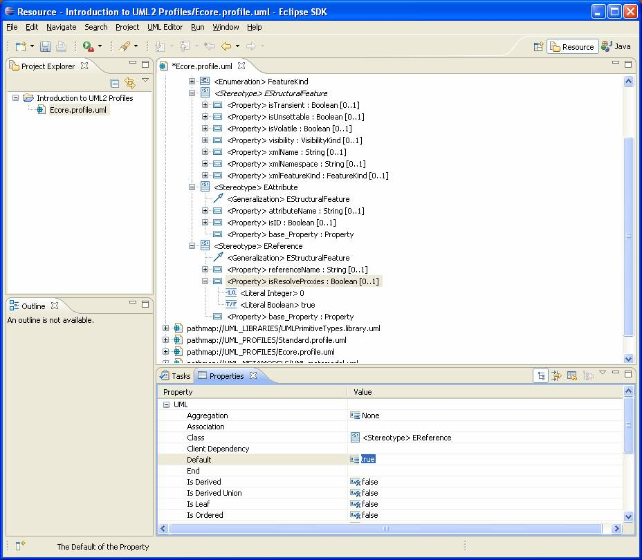<![endif]></p>

<p style='tab-stops:45.8pt 91.6pt 137.4pt 183.2pt 229.0pt 274.8pt 320.6pt 366.4pt 412.2pt 458.0pt 503.8pt 549.6pt 595.4pt 641.2pt 687.0pt 732.8pt'>Let�s
look at how to perform the same task using Java code. The code snippet below
(from the <span style='font-family:"Courier New"'>GettingStartedWithUML2</span>
class) shows a method that programmatically creates and returns an attribute with
a specified upper bound, lower bound, type, and name in a specified class.</p>

<pre style='margin-left:9.0pt'><span style='mso-tab-count:1'>���� </span><span
class=GramE>protected</span> static Property <span class=SpellE>createAttribute</span>(org.eclipse.uml2.uml.Class class_,</pre><pre
style='margin-left:9.0pt'><span style='mso-tab-count:3'>������������������� </span>String name, Type <span
class=SpellE>type</span>, <span class=SpellE>int</span> <span class=SpellE>lowerBound</span>, <span
class=SpellE>int</span> <span class=SpellE>upperBound</span>) {</pre><pre
style='margin-left:9.0pt'><span style='mso-tab-count:
2'>�������� </span>Property attribute = <span class=SpellE>class_.<span
class=GramE>createOwnedAttribute</span></span><span class=GramE>(</span>name, type,</pre><pre
style='margin-left:9.0pt'><span style='mso-tab-count:3'>������������������� </span><span
class=SpellE><span class=GramE>lowerBound</span></span>, <span class=SpellE>upperBound</span>);</pre><pre
style='margin-left:9.0pt'><o:p>&nbsp;</o:p></pre><pre style='margin-left:9.0pt'><span
style='mso-tab-count:2'>����������� </span><span class=SpellE>StringBuffer</span> <span
class=SpellE>sb</span> = new <span class=SpellE><span class=GramE>StringBuffer</span></span><span
class=GramE>(</span>);</pre><pre style='margin-left:9.0pt'><o:p>&nbsp;</o:p></pre><pre
style='margin-left:9.0pt'><span style='mso-tab-count:2'>����������� </span><span
class=SpellE><span class=GramE>sb.append</span></span><span class=GramE>(</span>&quot;Attribute '&quot;);</pre><pre
style='margin-left:9.0pt'><o:p>&nbsp;</o:p></pre><pre style='margin-left:9.0pt'><span
style='mso-tab-count:2'>����������� </span><span class=SpellE><span
class=GramE>sb.append</span></span><span class=GramE>(</span><span
class=SpellE>attribute.getQualifiedName</span>());</pre><pre style='margin-left:
9.0pt'><o:p>&nbsp;</o:p></pre><pre style='margin-left:9.0pt'><span
style='mso-tab-count:2'>����������� </span><span class=SpellE><span
class=GramE>sb.append</span></span><span class=GramE>(</span>&quot;' : &quot;);</pre><pre
style='margin-left:9.0pt'><o:p>&nbsp;</o:p></pre><pre style='margin-left:9.0pt'><span
style='mso-tab-count:2'>����������� </span><span class=SpellE><span
class=GramE>sb.append</span></span><span class=GramE>(</span><span
class=SpellE>type.getQualifiedName</span>());</pre><pre style='margin-left:
9.0pt'><o:p>&nbsp;</o:p></pre><pre style='margin-left:9.0pt'><span
style='mso-tab-count:2'>����������� </span><span class=SpellE><span
class=GramE>sb.append</span></span><span class=GramE>(</span>&quot; [&quot;);</pre><pre
style='margin-left:9.0pt'><span style='mso-tab-count:2'>����������� </span><span
class=SpellE><span class=GramE>sb.append</span></span><span class=GramE>(</span><span
class=SpellE>lowerBound</span>);</pre><pre style='margin-left:9.0pt'><span
style='mso-tab-count:2'>����������� </span><span class=SpellE><span
class=GramE>sb.append</span></span><span class=GramE>(</span>&quot;..&quot;);</pre><pre
style='margin-left:9.0pt'><span style='mso-tab-count:2'>����������� </span><span
class=SpellE><span class=GramE>sb.append</span></span><span class=GramE>(</span><span
class=SpellE>LiteralUnlimitedNatural.UNLIMITED</span> == <span class=SpellE>upperBound</span></pre><pre
style='margin-left:9.0pt'><span style='mso-tab-count:3'>������������������� </span>? &quot;*&quot;</pre><pre
style='margin-left:9.0pt'><span style='mso-tab-count:3'>������������������� </span>: <span
class=SpellE><span class=GramE>String.valueOf</span></span><span class=GramE>(</span><span
class=SpellE>upperBound</span>));</pre><pre style='margin-left:9.0pt'><span
style='mso-tab-count:2'>����������� </span><span class=SpellE><span
class=GramE>sb.append</span></span><span class=GramE>(</span>&quot;]&quot;);</pre><pre
style='margin-left:9.0pt'><o:p>&nbsp;</o:p></pre><pre style='margin-left:9.0pt'><span
style='mso-tab-count:2'>����������� </span><span class=SpellE><span
class=GramE>sb.append</span></span><span class=GramE>(</span>&quot; created.&quot;);</pre><pre
style='margin-left:9.0pt'><o:p>&nbsp;</o:p></pre><pre style='margin-left:9.0pt'><span
style='mso-tab-count:2'>����������� </span><span class=GramE>out(</span><span
class=SpellE>sb.toString</span>());</pre><pre style='margin-left:9.0pt'><o:p>&nbsp;</o:p></pre><pre
style='margin-left:9.0pt'><span style='mso-tab-count:2'>����������� </span><span
class=GramE>return</span> attribute;</pre><pre style='margin-left:9.0pt'><span
style='mso-tab-count:1'>���� </span>}</pre>

<p style='tab-stops:45.8pt 91.6pt 137.4pt 183.2pt 229.0pt 274.8pt 320.6pt 366.4pt 412.2pt 458.0pt 503.8pt 549.6pt 595.4pt 641.2pt 687.0pt 732.8pt'>Here
we call the <span class=SpellE><code>createOwnedAttribute</code></span><code>(String,
Type, <span class=SpellE>int</span>, <span class=SpellE>int</span>)</code>
convenience factory method <span
style='mso-spacerun:yes'>�</span>to ask the class to create a property as one
of its owned attributes, set the type of the attribute to the specified type,
and set the lower and upper bounds of the attribute (the factory method creates
a literal integer and literal unlimited natural, respectively, and sets its
value to the specified integer value).</p>

<p style='tab-stops:45.8pt 91.6pt 137.4pt 183.2pt 229.0pt 274.8pt 320.6pt 366.4pt 412.2pt 458.0pt 503.8pt 549.6pt 595.4pt 641.2pt 687.0pt 732.8pt'><span
style='mso-spacerun:yes'>�</span>The <span class=SpellE><code>LiteralUnlimitedNatural.UNLIMITED</code></span>
constant represents the unlimited value for upper bounds (-1), as it does in
EMF.</p>

<p style='tab-stops:45.8pt 91.6pt 137.4pt 183.2pt 229.0pt 274.8pt 320.6pt 366.4pt 412.2pt 458.0pt 503.8pt 549.6pt 595.4pt 641.2pt 687.0pt 732.8pt'>OK,
let�s see this method in action. For example, we could create an attribute with
multiplicity 0<span class=GramE>..1</span> of type �<span class=SpellE>UMLPrimitiveTypes::Boolean</span>�
named �<span class=SpellE>isTransient</span>� in stereotype �<span
class=SpellE>EStructuralFeature</span>� as follows:</p>

<pre style='margin-left:9.0pt'><span style='mso-tab-count:2'>����������� </span>Property <span
class=SpellE>isTransientProperty</span> = <span class=GramE>GettingStartedWithUML2.createAttribute(</span></pre><pre
style='margin-left:9.0pt'><span style='mso-tab-count:3'>������������������� </span><span
class=SpellE><span class=GramE>eStructuralFeatureStereotype</span></span>, &quot;<span
class=SpellE>isTransient</span>&quot;, <span class=SpellE>booleanPrimitiveType</span>,</pre><pre
style='margin-left:9.0pt'><span style='mso-tab-count:3'>������������������� </span>0, 1);</pre>

<p style='tab-stops:45.8pt 91.6pt 137.4pt 183.2pt 229.0pt 274.8pt 320.6pt 366.4pt 412.2pt 458.0pt 503.8pt 549.6pt 595.4pt 641.2pt 687.0pt 732.8pt'><span
style='mso-spacerun:yes'>�</span>Write code to programmatically create the
remaining stereotype properties (i.e. �<span class=SpellE>isUnsettable</span>�,
�<span class=SpellE>isVolatile</span>�, �visibility�, �<span class=SpellE>xmlName</span>�,
�<span class=SpellE>xmlNamespace</span>�, and �<span class=SpellE>xmlFeatureKind</span>�
in stereotype �<span class=SpellE>EStructuralFeature</span>�; �<span
class=SpellE>attributeName</span>� and �<span class=SpellE>isID</span>� in
stereotype �<span class=SpellE>EAttribute</span>�; �<span class=SpellE>referenceName</span>�
and �<span class=SpellE>isResolveProxies</span>� in stereotype �<span
class=SpellE>EReference</span>�) for the <span class=SpellE>Ecore</span>
profile.</p>

<h3 style='tab-stops:45.8pt 91.6pt 137.4pt 183.2pt 229.0pt 274.8pt 320.6pt 366.4pt 412.2pt 458.0pt 503.8pt 549.6pt 595.4pt 641.2pt 687.0pt 732.8pt'>Referencing
<span class=SpellE>Metaclasses</span></h3>

<p style='tab-stops:45.8pt 91.6pt 137.4pt 183.2pt 229.0pt 274.8pt 320.6pt 366.4pt 412.2pt 458.0pt 503.8pt 549.6pt 595.4pt 641.2pt 687.0pt 732.8pt'>A
profile is a restricted form of a <span class=SpellE>metamodel</span> that must
always be related to a reference <span class=SpellE>metamodel</span> (i.e.
UML). A profile cannot be used without its reference <span class=SpellE>metamodel</span>;
it defines a limited capability to extend <span class=SpellE>metaclasses</span>
of the reference <span class=SpellE>metamodel</span> via stereotypes. Profiles
can be made to reference <span class=SpellE>metaclasses</span> from <span
class=SpellE>metamodels</span> by creating an import relationship between the
profile and the reference <span class=SpellE>metaclass</span>. To reference a <span
class=SpellE>metaclass</span> using the UML editor, follow these steps:</p>

<p style='margin-left:27.5pt;tab-stops:45.8pt 91.6pt 137.4pt 183.2pt 229.0pt 274.8pt 320.6pt 366.4pt 412.2pt 458.0pt 503.8pt 549.6pt 595.4pt 641.2pt 687.0pt 732.8pt'>1)
Select a profile (i.e. <b style='mso-bidi-font-weight:normal'>&lt;<span
style='mso-bidi-font-weight:bold'>Profile&gt; <span class=SpellE>ecore</span></span></b>)
in the UML editor.</p>

<p style='margin-left:27.5pt;tab-stops:45.8pt 91.6pt 137.4pt 183.2pt 229.0pt 274.8pt 320.6pt 366.4pt 412.2pt 458.0pt 503.8pt 549.6pt 595.4pt 641.2pt 687.0pt 732.8pt'>2)
Select the <b style='mso-bidi-font-weight:normal'>UML Editor &gt; Profile &gt;
Reference <span class=SpellE>Metaclass</span>�</b> menu item.</p>

<p style='margin-left:27.5pt;tab-stops:45.8pt 91.6pt 137.4pt 183.2pt 229.0pt 274.8pt 320.6pt 366.4pt 412.2pt 458.0pt 503.8pt 549.6pt 595.4pt 641.2pt 687.0pt 732.8pt'>3)
Choose a <span class=SpellE>metaclass</span> (i.e. <span class=SpellE><b
style='mso-bidi-font-weight:normal'>uml::Property</b></span>)<span class=GramE>,</span>
press the <b style='mso-bidi-font-weight:normal'>Add</b> button, then press the
<b style='mso-bidi-font-weight:normal'>OK</b> button.</p>

<p style='tab-stops:45.8pt 91.6pt 137.4pt 183.2pt 229.0pt 274.8pt 320.6pt 366.4pt 412.2pt 458.0pt 503.8pt 549.6pt 595.4pt 641.2pt 687.0pt 732.8pt'>At
this point your workspace should look something like this:</p>

<p style='tab-stops:45.8pt 91.6pt 137.4pt 183.2pt 229.0pt 274.8pt 320.6pt 366.4pt 412.2pt 458.0pt 503.8pt 549.6pt 595.4pt 641.2pt 687.0pt 732.8pt'><!--[if gte vml 1]><v:shape
 id="_x0000_i1137" type="#_x0000_t75" style='width:696pt;height:607.5pt'>
 <v:imagedata src="article_files/image019.png" o:title=""/>
</v:shape><![endif]--><![if !vml]>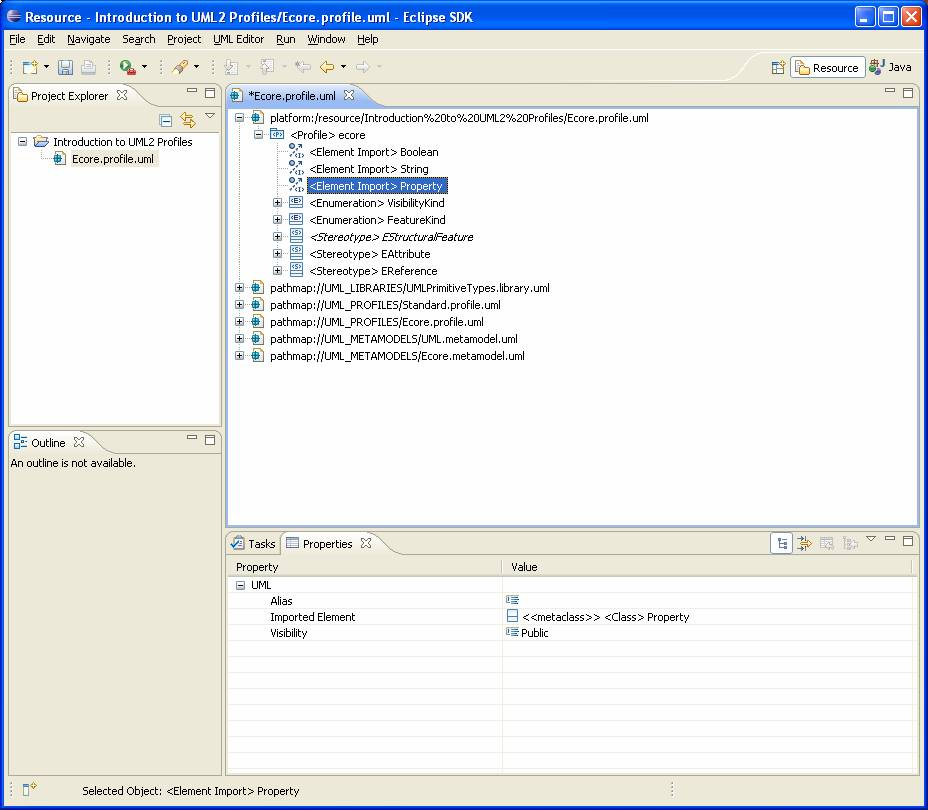<![endif]></p>

<p style='tab-stops:45.8pt 91.6pt 137.4pt 183.2pt 229.0pt 274.8pt 320.6pt 366.4pt 412.2pt 458.0pt 503.8pt 549.6pt 595.4pt 641.2pt 687.0pt 732.8pt'>Let�s
look at how to perform the same task using Java code. The code snippet below
shows a method that programmatically references the <span class=SpellE>metaclass</span>
with a specified name in the UML <span class=SpellE>metamodel</span> from a specified
profile and returns it.</p>

<pre style='margin-left:9.0pt'><span style='mso-tab-count:1'>���� </span><span
class=GramE>protected</span> static org.eclipse.uml2.uml.Class <span
class=SpellE>referenceMetaclass</span>(Profile <span class=SpellE>profile</span>,</pre><pre
style='margin-left:9.0pt'><span style='mso-tab-count:3'>������������������� </span><span
lang=IT style='mso-ansi-language:IT'>String name) {<o:p></o:p></span></pre><pre
style='margin-left:9.0pt'><span lang=IT style='mso-ansi-language:
IT'><span style='mso-tab-count:2'>�������� </span>Model umlMetamodel = (Model) load(URI<o:p></o:p></span></pre><pre
style='margin-left:9.0pt'><span lang=IT style='mso-ansi-language:IT'><span
style='mso-tab-count:3'>������������������� </span>.createURI(UML2Resource.UML2_METAMODEL_URI));<o:p></o:p></span></pre><pre
style='margin-left:9.0pt'><span lang=IT style='mso-ansi-language:IT'><o:p>&nbsp;</o:p></span></pre><pre
style='margin-left:9.0pt'><span lang=IT style='mso-ansi-language:
IT'><span style='mso-tab-count:2'>�������� </span>org.eclipse.uml2.Class metaclass = (org.eclipse.uml2.uml.Class) umlMetamodel<o:p></o:p></span></pre><pre
style='margin-left:9.0pt'><span lang=IT style='mso-ansi-language:IT'><span
style='mso-tab-count:3'>������������������� </span></span>.<span class=SpellE><span
class=GramE>getOwnedType</span></span><span class=GramE>(</span>name);</pre><pre
style='margin-left:9.0pt'><o:p>&nbsp;</o:p></pre><pre style='margin-left:9.0pt'><span style='mso-tab-count:2'>�������� </span><span class=SpellE><span
class=GramE>profile.createMetaclassReference</span></span><span class=GramE>(</span><span
class=SpellE>metaclass</span>);</pre><pre style='margin-left:9.0pt'><o:p>&nbsp;</o:p></pre><pre
style='margin-left:9.0pt'><span style='mso-tab-count:2'>����������� </span><span
class=GramE>out(</span>&quot;<span class=SpellE>Metaclass</span> '&quot; + <span
class=SpellE>metaclass.getQualifiedName</span>() + &quot;' referenced.&quot;);</pre><pre
style='margin-left:9.0pt'><o:p>&nbsp;</o:p></pre><pre style='margin-left:9.0pt'><span
style='mso-tab-count:2'>����������� </span><span class=GramE>return</span> <span
class=SpellE>metaclass</span>;</pre><pre style='margin-left:9.0pt'><span
style='mso-tab-count:1'>���� </span>}</pre>

<p style='tab-stops:45.8pt 91.6pt 137.4pt 183.2pt 229.0pt 274.8pt 320.6pt 366.4pt 412.2pt 458.0pt 503.8pt 549.6pt 595.4pt 641.2pt 687.0pt 732.8pt'>Here
we load the <span class=SpellE>metamodel</span> <span
style='mso-spacerun:yes'>�</span>containing the UML <span class=SpellE>metaclasses</span>
using a utility method (described later) and a URI defined on the <span
class=SpellE><span style='font-family:"Courier New"'>UMLResource</span></span>
interface. Next, we retrieve the desired (owned) <span class=SpellE>metaclass</span>
from the (meta<span class=GramE>)model</span> by name <span
style='mso-spacerun:yes'>�</span>using the convenience method. Finally, we
invoke another convenience method <span
style='mso-spacerun:yes'>�</span>to create the element import relationship
between the profile and the <span class=SpellE>metaclass</span>, notify the
user, and return the <span class=SpellE>metaclass</span>.</p>

<p style='tab-stops:45.8pt 91.6pt 137.4pt 183.2pt 229.0pt 274.8pt 320.6pt 366.4pt 412.2pt 458.0pt 503.8pt 549.6pt 595.4pt 641.2pt 687.0pt 732.8pt'><span
style='mso-spacerun:yes'>�</span>The UML resources plug-in (<span
style='font-family:"Courier New"'>org.eclipse.uml2.uml.resources</span>)
provides two <span class=SpellE>metamodels</span> (which by convention have a <code>.<span
class=SpellE>metamodel.uml</span></code> file extension), UML2 and <span
class=SpellE>Ecore</span>. These <span class=SpellE>metamodels</span> can be
accessed using <span class=SpellE>URIs</span> defined on the <span
class=SpellE><span style='font-family:"Courier New"'>UMLResource</span></span>
interface, as shown above.</p>

<p style='tab-stops:45.8pt 91.6pt 137.4pt 183.2pt 229.0pt 274.8pt 320.6pt 366.4pt 412.2pt 458.0pt 503.8pt 549.6pt 595.4pt 641.2pt 687.0pt 732.8pt'>OK,
let�s see this method in action. For example, we could reference the <span
class=SpellE>metaclass</span> named �Property� from profile �<span
class=SpellE>ecore</span>� as follows:</p>

<pre style='margin-left:9.0pt'><span style='mso-tab-count:2'>����������� </span><span
class=GramE>org.eclipse.uml2.uml.Class</span> <span class=SpellE>propertyMetaclass</span> = <span
class=SpellE>referenceMetaclass</span>(</pre><pre style='margin-left:9.0pt'><span
style='mso-tab-count:3'>������������������� </span><span class=SpellE><span
class=GramE>ecoreProfile</span></span>, <span class=SpellE>UMLPackage.Literals.PROPERTY.getName</span>());</pre>

<h3 style='tab-stops:45.8pt 91.6pt 137.4pt 183.2pt 229.0pt 274.8pt 320.6pt 366.4pt 412.2pt 458.0pt 503.8pt 549.6pt 595.4pt 641.2pt 687.0pt 732.8pt'>Creating
Extensions</h3>

<p style='tab-stops:45.8pt 91.6pt 137.4pt 183.2pt 229.0pt 274.8pt 320.6pt 366.4pt 412.2pt 458.0pt 503.8pt 549.6pt 595.4pt 641.2pt 687.0pt 732.8pt'>Extensions
are used to indicate that the properties of <span class=SpellE>metaclasses</span>
are extended through stereotypes, and give the ability to flexibly apply (and later
<span class=SpellE>unapply</span>) stereotypes to elements. An extension is a
kind of association, one end of which is an ordinary property, and the other is
an extension end. An extension may be required (depending on the lower bound of
the extension end), which indicates that an instance of the extending
stereotype must be created whenever an instance of the extended <span
class=SpellE>metaclass</span> is created. To create an extension using the UML
editor, follow these steps:</p>

<p style='margin-left:27.5pt;tab-stops:45.8pt 91.6pt 137.4pt 183.2pt 229.0pt 274.8pt 320.6pt 366.4pt 412.2pt 458.0pt 503.8pt 549.6pt 595.4pt 641.2pt 687.0pt 732.8pt'>1)
Select a stereotype (i.e. <b style='mso-bidi-font-weight:normal'>&lt;<span
style='mso-bidi-font-weight:bold'>Stereotype&gt; <span class=SpellE>EAttribute</span></span></b>)
in the UML editor.</p>

<p style='margin-left:27.5pt;tab-stops:45.8pt 91.6pt 137.4pt 183.2pt 229.0pt 274.8pt 320.6pt 366.4pt 412.2pt 458.0pt 503.8pt 549.6pt 595.4pt 641.2pt 687.0pt 732.8pt'>2)
Select the <b style='mso-bidi-font-weight:normal'>UML Editor &gt; Stereotype
&gt; Create Extension�</b> menu item.</p>

<p style='margin-left:27.5pt;tab-stops:45.8pt 91.6pt 137.4pt 183.2pt 229.0pt 274.8pt 320.6pt 366.4pt 412.2pt 458.0pt 503.8pt 549.6pt 595.4pt 641.2pt 687.0pt 732.8pt'>3)
Choose a <span class=SpellE>metaclass</span> (i.e. <span class=SpellE><b>uml::</b><b
style='mso-bidi-font-weight:normal'>Property</b></span>)<span class=GramE>,</span>
press the <b style='mso-bidi-font-weight:normal'>Add</b> button, then press the
<b style='mso-bidi-font-weight:normal'>OK</b> button.</p>

<p style='tab-stops:45.8pt 91.6pt 137.4pt 183.2pt 229.0pt 274.8pt 320.6pt 366.4pt 412.2pt 458.0pt 503.8pt 549.6pt 595.4pt 641.2pt 687.0pt 732.8pt'><span
style='mso-spacerun:yes'>�</span>Create the other extension (i.e. between <span
class=SpellE><b>uml::</b><b style='mso-bidi-font-weight:normal'>Property</b></span>
and <b style='mso-bidi-font-weight:normal'>&lt;Stereotype&gt; <span
class=SpellE>EReference</span></b>) for the <span class=SpellE>Ecore</span>
profile using the UML editor.</p>

<p style='tab-stops:45.8pt 91.6pt 137.4pt 183.2pt 229.0pt 274.8pt 320.6pt 366.4pt 412.2pt 458.0pt 503.8pt 549.6pt 595.4pt 641.2pt 687.0pt 732.8pt'>At
this point your workspace should look something like this:</p>

<p style='tab-stops:45.8pt 91.6pt 137.4pt 183.2pt 229.0pt 274.8pt 320.6pt 366.4pt 412.2pt 458.0pt 503.8pt 549.6pt 595.4pt 641.2pt 687.0pt 732.8pt'><!--[if gte vml 1]><v:shape
 id="_x0000_i1138" type="#_x0000_t75" style='width:696pt;height:607.5pt'>
 <v:imagedata src="article_files/image021.png" o:title=""/>
</v:shape><![endif]--><![if !vml]>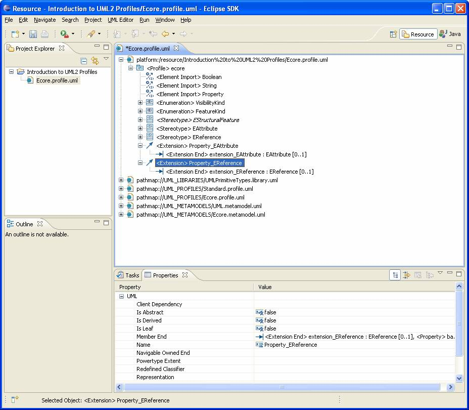<![endif]></p>

<p style='tab-stops:45.8pt 91.6pt 137.4pt 183.2pt 229.0pt 274.8pt 320.6pt 366.4pt 412.2pt 458.0pt 503.8pt 549.6pt 595.4pt 641.2pt 687.0pt 732.8pt'><span
style='mso-spacerun:yes'>�</span>You�ll notice that a number of new elements
have appeared in the UML editor. In particular, you�ll see a new stereotype
property with a name of the form <span style='font-family:"Courier New"'>base_&lt;<span
class=SpellE>metaclass</span> name&gt;</span>, an extension with a name of the
form <span style='font-family:"Courier New"'>&lt;<span class=SpellE>metaclass</span>
name&gt;_&lt;stereotype name&gt;</span>, and an extension end with a name of
the form <span style='font-family:"Courier New"'>extension_&lt;stereotype
name&gt;</span>. It�s important that these elements <b style='mso-bidi-font-weight:
normal'>not</b> be modified, since the UML2 profile mechanism depends on these
constructs.</p>

<p style='tab-stops:45.8pt 91.6pt 137.4pt 183.2pt 229.0pt 274.8pt 320.6pt 366.4pt 412.2pt 458.0pt 503.8pt 549.6pt 595.4pt 641.2pt 687.0pt 732.8pt'>Let�s
look at how to perform the same task using Java code. The code snippet below
shows a method that programmatically creates and returns <span class=GramE>a(</span>n)
(required) extension between a specified <span class=SpellE>metaclass</span>
and a specified stereotype.</p>

<pre style='margin-left:9.0pt'><span style='mso-tab-count:1'>���� </span><span
class=GramE>protected</span> static Extension <span class=SpellE>createExtension</span>(</pre><pre
style='margin-left:9.0pt'><span style='mso-tab-count:3'>������������������� </span><span
class=GramE>org.eclipse.uml2.uml.Class</span> <span class=SpellE>metaclass</span>, Stereotype <span
class=SpellE>stereotype</span>,</pre><pre style='margin-left:9.0pt'><span
style='mso-tab-count:3'>������������������� </span><span class=SpellE><span
class=GramE>boolean</span></span> required) {</pre><pre style='margin-left:
9.0pt'><span style='mso-tab-count:
2'>�������� </span>Extension <span class=SpellE>extension</span> = <span
class=SpellE><span class=GramE>stereotype.createExtension</span></span><span
class=GramE>(</span><span class=SpellE>metaclass</span>, required);</pre><pre
style='margin-left:9.0pt'><o:p>&nbsp;</o:p></pre><pre style='margin-left:9.0pt'><span
style='mso-tab-count:2'>����������� </span><span class=GramE>out(</span>(required</pre><pre
style='margin-left:9.0pt'><span style='mso-tab-count:3'>������������������� </span>? &quot;Required extension '&quot;</pre><pre
style='margin-left:9.0pt'><span style='mso-tab-count:3'>������������������� </span>: &quot;Extension '&quot;) + <span
class=SpellE><span class=GramE>extension.getQualifiedName</span></span><span
class=GramE>(</span>) + &quot;' created.&quot;);</pre><pre style='margin-left:
9.0pt'><o:p>&nbsp;</o:p></pre><pre style='margin-left:9.0pt'><span
style='mso-tab-count:2'>����������� </span><span class=GramE>return</span> extension;</pre><pre
style='margin-left:9.0pt'><span style='mso-tab-count:1'>���� </span>}</pre>

<p style='tab-stops:45.8pt 91.6pt 137.4pt 183.2pt 229.0pt 274.8pt 320.6pt 366.4pt 412.2pt 458.0pt 503.8pt 549.6pt 595.4pt 641.2pt 687.0pt 732.8pt'>Here
we call a convenience method on the stereotype that creates an extension (and
its ends) between it and a <span class=SpellE>metaclass</span> <span style='mso-spacerun:yes'>�</span>as one of its siblings
(i.e. as a child of its profile namespace). Behind the scenes, the stereotype
also creates the ends of the extension, resulting in a new property on the
stereotype (with a special name) and an extension end owned by the extension (again,
with a special name).</p>

<p style='tab-stops:45.8pt 91.6pt 137.4pt 183.2pt 229.0pt 274.8pt 320.6pt 366.4pt 412.2pt 458.0pt 503.8pt 549.6pt 595.4pt 641.2pt 687.0pt 732.8pt'>OK,
let�s see this method in action. For example, we could create a non-required
extension between <span class=SpellE>metaclass</span> �Property� and stereotype
�<span class=SpellE>EAttribute</span>� in profile �<span class=SpellE>ecore</span>�
as follows:</p>

<pre style='margin-left:9.0pt'><span style='mso-tab-count:2'>����������� </span><span
class=SpellE><span class=GramE>createExtension</span></span><span class=GramE>(</span><span
class=SpellE>propertyMetaclass</span>, <span class=SpellE>eAttributeStereotype</span>, false);</pre>

<p style='tab-stops:45.8pt 91.6pt 137.4pt 183.2pt 229.0pt 274.8pt 320.6pt 366.4pt 412.2pt 458.0pt 503.8pt 549.6pt 595.4pt 641.2pt 687.0pt 732.8pt'><span
style='mso-spacerun:yes'>�</span>Write code to programmatically create the
other extension (i.e. between <span class=SpellE>metaclass</span> �Property�
and stereotype �<span class=SpellE>EReference</span>�) for the <span
class=SpellE>Ecore</span> profile.</p>

<h3 style='tab-stops:45.8pt 91.6pt 137.4pt 183.2pt 229.0pt 274.8pt 320.6pt 366.4pt 412.2pt 458.0pt 503.8pt 549.6pt 595.4pt 641.2pt 687.0pt 732.8pt'>Defining
Profiles</h3>

<p style='tab-stops:45.8pt 91.6pt 137.4pt 183.2pt 229.0pt 274.8pt 320.6pt 366.4pt 412.2pt 458.0pt 503.8pt 549.6pt 595.4pt 641.2pt 687.0pt 732.8pt'>There.
We�re done creating (a scaled down version of) the <span class=SpellE>Ecore</span>
<span class=GramE>profile,</span> and we�re ready to start using it. But before
we can, there�s one final thing we need to do � <i style='mso-bidi-font-style:
normal'>define</i> it. Since a profile effectively represents an augmentation
of a reference <span class=SpellE>metamodel</span> (UML), in order for the
extensions we�ve defined to appear as though they�re part of the UML <span
class=SpellE>metamodel</span>, they need to be �defined� at the meta-<span
class=SpellE>metamodel</span> (i.e. <span class=SpellE>Ecore</span>) level. The
implementation of profile support in UML2 does this by converting the contents
of the profile to an equivalent <span class=SpellE>Ecore</span> representation
that is stored as an annotation on the profile. Then, when a profile and its
stereotypes are applied to a model and its elements, dynamic EMF (see the EMF
book for details) is used to store property values for the stereotypes. For the
most part, you can ignore this complexity, as long as you remember to define
your profile before using it. To define a profile using the UML editor, follow these
steps:</p>

<p style='margin-left:27.5pt;tab-stops:45.8pt 91.6pt 137.4pt 183.2pt 229.0pt 274.8pt 320.6pt 366.4pt 412.2pt 458.0pt 503.8pt 549.6pt 595.4pt 641.2pt 687.0pt 732.8pt'>1)
Select a profile (i.e. <b style='mso-bidi-font-weight:normal'>&lt;<span
style='mso-bidi-font-weight:bold'>Profile&gt; <span class=SpellE>ecore</span></span></b>)
in the UML editor.</p>

<p style='margin-left:27.5pt;tab-stops:45.8pt 91.6pt 137.4pt 183.2pt 229.0pt 274.8pt 320.6pt 366.4pt 412.2pt 458.0pt 503.8pt 549.6pt 595.4pt 641.2pt 687.0pt 732.8pt'>2)
Select the <b style='mso-bidi-font-weight:normal'>UML Editor &gt; Profile &gt;
Define</b> menu item.</p>

<p style='tab-stops:45.8pt 91.6pt 137.4pt 183.2pt 229.0pt 274.8pt 320.6pt 366.4pt 412.2pt 458.0pt 503.8pt 549.6pt 595.4pt 641.2pt 687.0pt 732.8pt'>At
this point your workspace should look something like this:</p>

<p style='tab-stops:45.8pt 91.6pt 137.4pt 183.2pt 229.0pt 274.8pt 320.6pt 366.4pt 412.2pt 458.0pt 503.8pt 549.6pt 595.4pt 641.2pt 687.0pt 732.8pt'><!--[if gte vml 1]><v:shape
 id="_x0000_i1139" type="#_x0000_t75" style='width:696pt;height:709.5pt'>
 <v:imagedata src="article_files/image023.png" o:title=""/>
</v:shape><![endif]--><![if !vml]>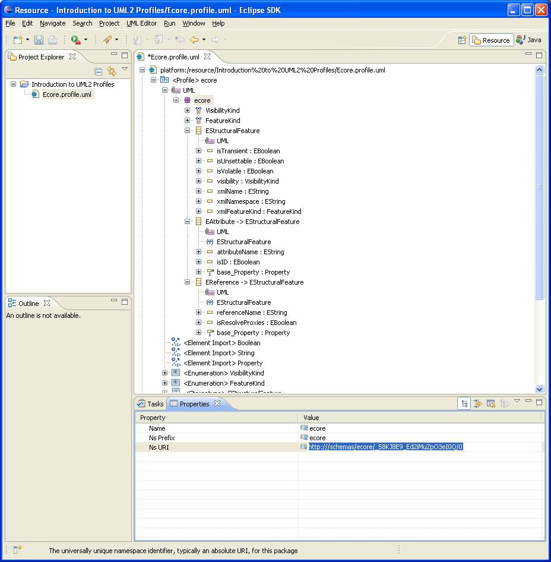<![endif]></p>

<p style='tab-stops:45.8pt 91.6pt 137.4pt 183.2pt 229.0pt 274.8pt 320.6pt 366.4pt 412.2pt 458.0pt 503.8pt 549.6pt 595.4pt 641.2pt 687.0pt 732.8pt'><span
style='mso-spacerun:yes'>�</span>You�ll notice that an annotation with source <b
style='mso-bidi-font-weight:normal'>http://www.eclipse.org/uml2/2.0.0/UML</b>
has been attached to the profile. It contains the generated <span class=SpellE>Ecore</span>
representation (an <span class=SpellE>Ecore</span> package with classes,
attributes, <span class=SpellE>enums</span>, etc.) of the profile. As with
extensions, it�s important that this annotation (and its contents) <b
style='mso-bidi-font-weight:normal'>not</b> be modified, since the UML2 profile
mechanism depends on these constructs.</p>

<p style='tab-stops:45.8pt 91.6pt 137.4pt 183.2pt 229.0pt 274.8pt 320.6pt 366.4pt 412.2pt 458.0pt 503.8pt 549.6pt 595.4pt 641.2pt 687.0pt 732.8pt'>Let�s
look at how to perform the same task using Java code. The code snippet below
shows a method that programmatically defines a specified profile.</p>

<pre style='margin-left:9.0pt'><span style='mso-tab-count:1'>���� </span><span
class=GramE>protected</span> static void <span class=SpellE>defineProfile</span>(Profile <span
class=SpellE>profile</span>) {</pre><pre style='margin-left:9.0pt'><span style='mso-tab-count:2'>�������� </span><span class=SpellE><span
class=GramE>profile.define</span></span><span class=GramE>(</span>);</pre><pre
style='margin-left:9.0pt'><o:p>&nbsp;</o:p></pre><pre style='margin-left:9.0pt'><span
style='mso-tab-count:2'>����������� </span><span class=GramE>out(</span>&quot;Profile '&quot; + <span
class=SpellE>profile.getQualifiedName</span>() + &quot;' defined.&quot;);</pre><pre
style='margin-left:9.0pt'><span style='mso-tab-count:1'>���� </span>}</pre>

<p style='tab-stops:45.8pt 91.6pt 137.4pt 183.2pt 229.0pt 274.8pt 320.6pt 366.4pt 412.2pt 458.0pt 503.8pt 549.6pt 595.4pt 641.2pt 687.0pt 732.8pt'>Here
we call a convenience method on the profile <span
style='mso-spacerun:yes'>�</span>that generates the <span class=SpellE>Ecore</span>
representation of the profile and increments its version.</p>

<p style='tab-stops:45.8pt 91.6pt 137.4pt 183.2pt 229.0pt 274.8pt 320.6pt 366.4pt 412.2pt 458.0pt 503.8pt 549.6pt 595.4pt 641.2pt 687.0pt 732.8pt'>OK,
let�s see this method in action. For example, we could define the �<span
class=SpellE>ecore</span>� profile as follows:</p>

<pre style='margin-left:9.0pt'><span style='mso-tab-count:2'>����������� </span><span
class=SpellE><span class=GramE>defineProfile</span></span><span class=GramE>(</span><span
class=SpellE>ecoreProfile</span>);</pre>

<h3 style='tab-stops:45.8pt 91.6pt 137.4pt 183.2pt 229.0pt 274.8pt 320.6pt 366.4pt 412.2pt 458.0pt 503.8pt 549.6pt 595.4pt 641.2pt 687.0pt 732.8pt'>Saving
Profiles</h3>

<p style='tab-stops:45.8pt 91.6pt 137.4pt 183.2pt 229.0pt 274.8pt 320.6pt 366.4pt 412.2pt 458.0pt 503.8pt 549.6pt 595.4pt 641.2pt 687.0pt 732.8pt'>Now
that we�ve spent all this time creating and defining a profile, we�d better
save our work. When we created our profile using the UML model wizard, a UML
resource was created for us, so now all that needs to be done is to serialize
the contents of our profile as XMI to a file on disk (i.e. <span class=SpellE><code>Ecore.profile.uml</code></span>).
To save a profile using the UML editor, follow these steps:</p>

<p style='margin-left:27.5pt;tab-stops:45.8pt 91.6pt 137.4pt 183.2pt 229.0pt 274.8pt 320.6pt 366.4pt 412.2pt 458.0pt 503.8pt 549.6pt 595.4pt 641.2pt 687.0pt 732.8pt'>1)
Select the <b>File &gt; Save</b> menu item.</p>

<p style='tab-stops:45.8pt 91.6pt 137.4pt 183.2pt 229.0pt 274.8pt 320.6pt 366.4pt 412.2pt 458.0pt 503.8pt 549.6pt 595.4pt 641.2pt 687.0pt 732.8pt'>It�s
that simple. Programmatically, we have a bit more work to do because so far,
we�ve been creating our profile in a vacuum, i.e. without a containing
resource. The code snippet below shows a method that saves a specified package
to a resource with a specified URI.</p>

<pre style='margin-left:9.0pt'><span style='mso-tab-count:1'>���� </span><span
class=GramE>protected</span> static void save(org.eclipse.uml2.uml.Package package_, URI <span
class=SpellE>uri</span>) {</pre><pre style='margin-left:9.0pt'><span style='mso-tab-count:2'>�������� </span>Resource <span
class=SpellE>resource</span> = <span class=SpellE>RESOURCE_<span class=GramE>SET.createResource</span></span><span
class=GramE>(</span><span class=SpellE>uri</span>);</pre><pre style='margin-left:
9.0pt'><span style='mso-tab-count:
2'>�������� </span><span class=SpellE><span class=GramE>resource.getContents</span></span><span
class=GramE>(</span>).add(package_);</pre><pre style='margin-left:9.0pt'><o:p>&nbsp;</o:p></pre><pre
style='margin-left:9.0pt'><span style='mso-tab-count:2'>����������� </span><span
class=GramE>try</span> {</pre><pre style='margin-left:9.0pt'><span style='mso-tab-count:3'>���������������� </span><span
class=SpellE><span class=GramE>resource.save</span></span><span class=GramE>(</span>null);</pre><pre
style='margin-left:9.0pt'><span style='mso-tab-count:3'>������������������� </span><span
class=GramE>out(</span>&quot;Done.&quot;);</pre><pre style='margin-left:9.0pt'><span
style='mso-tab-count:2'>����������� </span>} catch (<span class=SpellE>IOException</span> <span
class=SpellE>ioe</span>) {</pre><pre style='margin-left:9.0pt'><span style='mso-tab-count:3'>���������������� </span><span
class=GramE>err(</span><span class=SpellE>ioe.getMessage</span>());</pre><pre
style='margin-left:9.0pt'><span style='mso-tab-count:2'>����������� </span>}</pre><pre
style='margin-left:9.0pt'><span style='mso-tab-count:1'>���� </span>}</pre>

<p style='tab-stops:45.8pt 91.6pt 137.4pt 183.2pt 229.0pt 274.8pt 320.6pt 366.4pt 412.2pt 458.0pt 503.8pt 549.6pt 595.4pt 641.2pt 687.0pt 732.8pt'>Here
we use a statically initialized resource set <span
style='mso-spacerun:yes'>�</span>to create a resource with the specified URI,
add the package to the resource�s contents , and ask the
resource to save itself <span
style='mso-spacerun:yes'>�</span>using the default options. If an exception
occurs, we notify the user <span
style='mso-spacerun:yes'>�</span>via our handy utility method.</p>

<p style='tab-stops:45.8pt 91.6pt 137.4pt 183.2pt 229.0pt 274.8pt 320.6pt 366.4pt 412.2pt 458.0pt 503.8pt 549.6pt 595.4pt 641.2pt 687.0pt 732.8pt'>OK,
let�s see this method in action. For example, we could save the �<span
class=SpellE>ecore</span>� profile to a resource with URI �<span class=SpellE>Ecore.profile.uml</span>�
(relative to a URI passed in as an argument) as follows:</p>

<pre style='margin-left:9.0pt'><span style='mso-tab-count:2'>����������� </span><span
class=GramE>save(</span><span class=SpellE>ecoreProfile</span>, <span
class=SpellE>URI.createURI</span>(<span class=SpellE>args</span>[0]).<span
class=SpellE>appendSegment</span>(&quot;<span class=SpellE>Ecore</span>&quot;)</pre><pre
style='margin-left:9.0pt'><span style='mso-tab-count:3'>������������������� </span>.<span
class=SpellE><span class=GramE>appendFileExtension</span></span><span
class=GramE>(</span><span class=SpellE>UMLResource.PROFILE_FILE_EXTENSION</span>));</pre>

<p style='tab-stops:45.8pt 91.6pt 137.4pt 183.2pt 229.0pt 274.8pt 320.6pt 366.4pt 412.2pt 458.0pt 503.8pt 549.6pt 595.4pt 641.2pt 687.0pt 732.8pt'><span
style='mso-spacerun:yes'>�</span>The <span class=SpellE><code>UMLResource.PROFILE_FILE_EXTENSION</code></span>
constant represents the file extension for UML2 profiles (<code>.<span
class=SpellE>profile.uml</span></code>).</p>

<h3 style='tab-stops:45.8pt 91.6pt 137.4pt 183.2pt 229.0pt 274.8pt 320.6pt 366.4pt 412.2pt 458.0pt 503.8pt 549.6pt 595.4pt 641.2pt 687.0pt 732.8pt'>Loading
Models</h3>

<p style='tab-stops:45.8pt 91.6pt 137.4pt 183.2pt 229.0pt 274.8pt 320.6pt 366.4pt 412.2pt 458.0pt 503.8pt 549.6pt 595.4pt 641.2pt 687.0pt 732.8pt'>In
order to make use of our profile, we�ll need to open a model and load the
profile. We�ll use the ExtendedPO2 model that was created in the �Getting
Started with UML2� article (you�ll need to copy it into your project and
refresh the workspace first).</p>

<p style='tab-stops:45.8pt 91.6pt 137.4pt 183.2pt 229.0pt 274.8pt 320.6pt 366.4pt 412.2pt 458.0pt 503.8pt 549.6pt 595.4pt 641.2pt 687.0pt 732.8pt'>To
open a model using the UML editor, follow these steps:</p>

<p style='margin-left:27.5pt;tab-stops:45.8pt 91.6pt 137.4pt 183.2pt 229.0pt 274.8pt 320.6pt 366.4pt 412.2pt 458.0pt 503.8pt 549.6pt 595.4pt 641.2pt 687.0pt 732.8pt'>1)
Double-click on the resource (i.e. <b style='mso-bidi-font-weight:normal'>ExtendedPO2.uml</b>)
in the <b style='mso-bidi-font-weight:normal'>Navigator</b> view.</p>

<p style='tab-stops:45.8pt 91.6pt 137.4pt 183.2pt 229.0pt 274.8pt 320.6pt 366.4pt 412.2pt 458.0pt 503.8pt 549.6pt 595.4pt 641.2pt 687.0pt 732.8pt'>Behind
the scenes, a resource is obtained from the right kind resource factory (based
on the extension �<b style='mso-bidi-font-weight:normal'>.<span class=SpellE>uml</span></b>�)
and loaded, and then a new UML editor is opened and populated with the
resource�s contents.</p>

<p style='tab-stops:45.8pt 91.6pt 137.4pt 183.2pt 229.0pt 274.8pt 320.6pt 366.4pt 412.2pt 458.0pt 503.8pt 549.6pt 595.4pt 641.2pt 687.0pt 732.8pt'>To
load a profile (or any resource, actually) using the UML editor, follow these
steps:</p>

<p style='margin-left:27.5pt;tab-stops:45.8pt 91.6pt 137.4pt 183.2pt 229.0pt 274.8pt 320.6pt 366.4pt 412.2pt 458.0pt 503.8pt 549.6pt 595.4pt 641.2pt 687.0pt 732.8pt'>1)
Select the <b>UML Editor &gt; Load Resource�</b> menu item.</p>

<p style='margin-left:27.5pt;tab-stops:45.8pt 91.6pt 137.4pt 183.2pt 229.0pt 274.8pt 320.6pt 366.4pt 412.2pt 458.0pt 503.8pt 549.6pt 595.4pt 641.2pt 687.0pt 732.8pt'>2)
Press the <b>Browse Workspace�</b> button.</p>

<p style='margin-left:27.5pt;tab-stops:45.8pt 91.6pt 137.4pt 183.2pt 229.0pt 274.8pt 320.6pt 366.4pt 412.2pt 458.0pt 503.8pt 549.6pt 595.4pt 641.2pt 687.0pt 732.8pt'>3)
Select a resource (i.e. <b>Introduction to UML2 Profiles/<span class=SpellE>Ecore.profile.uml</span></b>)
and press the <b>OK</b> button.</p>

<p style='margin-left:27.5pt;tab-stops:45.8pt 91.6pt 137.4pt 183.2pt 229.0pt 274.8pt 320.6pt 366.4pt 412.2pt 458.0pt 503.8pt 549.6pt 595.4pt 641.2pt 687.0pt 732.8pt'>4)
Press the <b>OK</b> button.</p>

<p style='tab-stops:45.8pt 91.6pt 137.4pt 183.2pt 229.0pt 274.8pt 320.6pt 366.4pt 412.2pt 458.0pt 503.8pt 549.6pt 595.4pt 641.2pt 687.0pt 732.8pt'>At
this point your workspace should look something like this:</p>

<p style='tab-stops:45.8pt 91.6pt 137.4pt 183.2pt 229.0pt 274.8pt 320.6pt 366.4pt 412.2pt 458.0pt 503.8pt 549.6pt 595.4pt 641.2pt 687.0pt 732.8pt'><!--[if gte vml 1]><v:shape
 id="_x0000_i1140" type="#_x0000_t75" style='width:696pt;height:709.5pt'>
 <v:imagedata src="article_files/image025.png" o:title=""/>
</v:shape><![endif]--><![if !vml]>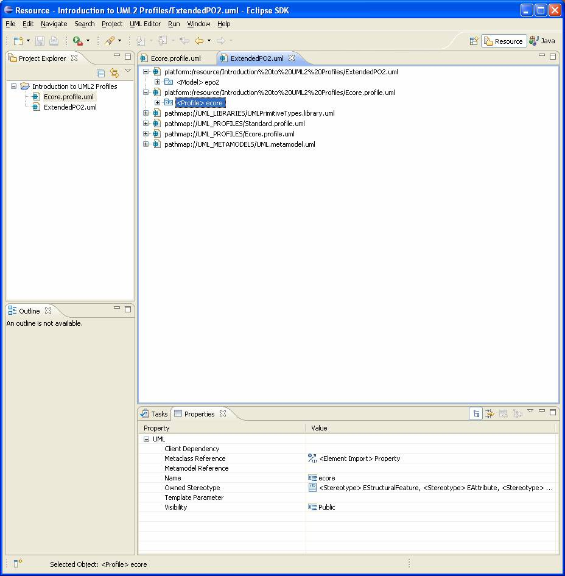<![endif]></p>

<p style='tab-stops:45.8pt 91.6pt 137.4pt 183.2pt 229.0pt 274.8pt 320.6pt 366.4pt 412.2pt 458.0pt 503.8pt 549.6pt 595.4pt 641.2pt 687.0pt 732.8pt'>Programmatically,
we have a bit more work to do. The code snippet below shows a method that loads
a package from a resource with a specified URI.</p>

<pre style='margin-left:.25in'><span style='mso-tab-count:1'>�� </span><span
class=GramE>protected</span> static org.eclipse.uml2.uml.Package load(URI <span
class=SpellE>uri</span>) {</pre><pre style='margin-left:.25in'><span
style='mso-tab-count:2'>���������� </span>org.eclipse.uml2.uml.Package package_ = null;</pre><pre
style='margin-left:.25in'><o:p>&nbsp;</o:p></pre><pre style='margin-left:.25in'><span
style='mso-tab-count:2'>���������� </span><span class=GramE>try</span> {</pre><pre
style='margin-left:.25in'><span style='mso-tab-count:
3'>��������������� </span>Resource <span class=SpellE>resource</span> = <span
class=SpellE>RESOURCE_<span class=GramE>SET.getResource</span></span><span
class=GramE>(</span><span class=SpellE>uri</span>, true);</pre><pre
style='margin-left:.25in'><o:p>&nbsp;</o:p></pre><pre style='margin-left:.25in'><span style='mso-tab-count:3'>��������������� </span>package_ = (org.eclipse.uml2.uml.Package) <span
class=SpellE><span class=GramE>EcoreUtil.getObjectByType</span></span><span
class=GramE>(</span></pre><pre style='margin-left:.25in'><span
style='mso-tab-count:4'>������������������������� </span><span class=SpellE><span
class=GramE>resource.getContents</span></span><span class=GramE>(</span>), <span
class=SpellE>UMLPackage.Literals.PACKAGE</span>);</pre><pre style='margin-left:
.25in'><span style='mso-tab-count:2'>���������� </span>} catch (<span
class=SpellE>WrappedException</span> we) {</pre><pre style='margin-left:.25in'><span style='mso-tab-count:3'>��������������� </span><span
class=GramE>err(</span><span class=SpellE>we.getMessage</span>());</pre><pre
style='margin-left:.25in'><span style='mso-tab-count:3'>������������������ </span><span
class=SpellE><span class=GramE>System.exit</span></span><span class=GramE>(</span>1);</pre><pre
style='margin-left:.25in'><span style='mso-tab-count:2'>���������� </span>}</pre><pre
style='margin-left:.25in'><o:p>&nbsp;</o:p></pre><pre style='margin-left:.25in'><span style='mso-tab-count:2'>������� </span><span class=GramE>return</span> package_;</pre><pre
style='margin-left:.25in'><span style='mso-tab-count:1'>�� </span>}</pre>

<p style='tab-stops:45.8pt 91.6pt 137.4pt 183.2pt 229.0pt 274.8pt 320.6pt 366.4pt 412.2pt 458.0pt 503.8pt 549.6pt 595.4pt 641.2pt 687.0pt 732.8pt'>Here
we obtain a resource with the specified URI from our statically initialized
resource <span class=GramE>set </span>, asking that
it be loaded on demand. Next, we use an EMF utility method <span style='mso-spacerun:yes'>�</span>to obtain the first object
of type <span style='font-family:"Courier New"'>Package</span> from the
resource�s contents. If an exception occurs, we notify the user <span style='mso-spacerun:yes'>�</span>via our handy utility
method. Finally, if all is well, we return <span
style='mso-spacerun:yes'>�</span>the package.</p>

<p style='tab-stops:45.8pt 91.6pt 137.4pt 183.2pt 229.0pt 274.8pt 320.6pt 366.4pt 412.2pt 458.0pt 503.8pt 549.6pt 595.4pt 641.2pt 687.0pt 732.8pt'><span
style='mso-spacerun:yes'>�</span>The <span class=SpellE><code>EcoreUtil</code></span>
class (provided by EMF) defines a number of utilities that you may find quite
useful when working with EMF-based resources.</p>

<p style='tab-stops:45.8pt 91.6pt 137.4pt 183.2pt 229.0pt 274.8pt 320.6pt 366.4pt 412.2pt 458.0pt 503.8pt 549.6pt 595.4pt 641.2pt 687.0pt 732.8pt'>OK,
let�s see this method in action. For example, we could load the �epo2� model
from a resource with URI �ExtendedPO2.uml� (relative to a URI passed in as an
argument) as follows:</p>

<pre style='margin-left:.25in'><span style='mso-tab-count:2'>���������� </span><span
lang=IT style='mso-ansi-language:IT'>Model epo2Model = (Model) load(URI.createURI(args[0]).appendSegment(<o:p></o:p></span></pre><pre
style='margin-left:.25in'><span lang=IT style='mso-ansi-language:IT'><span
style='mso-tab-count:3'>������������������ </span></span>&quot;ExtendedPO2&quot;).<span
class=SpellE><span class=GramE>appendFileExtension</span></span><span
class=GramE>(</span><span class=SpellE>UMLResource.FILE_EXTENSION</span>));</pre>

<h3 style='tab-stops:45.8pt 91.6pt 137.4pt 183.2pt 229.0pt 274.8pt 320.6pt 366.4pt 412.2pt 458.0pt 503.8pt 549.6pt 595.4pt 641.2pt 687.0pt 732.8pt'>Applying
Profiles</h3>

<p style='tab-stops:45.8pt 91.6pt 137.4pt 183.2pt 229.0pt 274.8pt 320.6pt 366.4pt 412.2pt 458.0pt 503.8pt 549.6pt 595.4pt 641.2pt 687.0pt 732.8pt'>OK,
our profile has been created, defined, and saved, and we�re ready to apply it to
our model. Applying a profile means that it is allowed (but not necessarily
required) to apply the stereotypes that are defined in the profile to elements
in the package. A profile application is a special type of package import that
indicates that a profile has been applied to a package. To apply a profile to a
package using the UML editor, follow these steps:</p>

<p style='margin-left:27.5pt;tab-stops:45.8pt 91.6pt 137.4pt 183.2pt 229.0pt 274.8pt 320.6pt 366.4pt 412.2pt 458.0pt 503.8pt 549.6pt 595.4pt 641.2pt 687.0pt 732.8pt'>1)
Select a package (i.e. <b style='mso-bidi-font-weight:normal'>&lt;Model&gt;
epo2</b>) in the UML editor.</p>

<p style='margin-left:27.5pt;tab-stops:45.8pt 91.6pt 137.4pt 183.2pt 229.0pt 274.8pt 320.6pt 366.4pt 412.2pt 458.0pt 503.8pt 549.6pt 595.4pt 641.2pt 687.0pt 732.8pt'>2)
Select the <b style='mso-bidi-font-weight:normal'>UML Editor &gt; Package &gt;
Apply Profile�</b> menu item.</p>

<p style='margin-left:27.5pt;tab-stops:45.8pt 91.6pt 137.4pt 183.2pt 229.0pt 274.8pt 320.6pt 366.4pt 412.2pt 458.0pt 503.8pt 549.6pt 595.4pt 641.2pt 687.0pt 732.8pt'>3)
Choose a profile (i.e. <span class=SpellE><b style='mso-bidi-font-weight:normal'>ecore</b></span>)<span
class=GramE>,</span> press the <b style='mso-bidi-font-weight:normal'>Add</b>
button, then press the <b style='mso-bidi-font-weight:normal'>OK</b> button.</p>

<p style='tab-stops:45.8pt 91.6pt 137.4pt 183.2pt 229.0pt 274.8pt 320.6pt 366.4pt 412.2pt 458.0pt 503.8pt 549.6pt 595.4pt 641.2pt 687.0pt 732.8pt'><span
style='mso-spacerun:yes'>�</span>Be sure to pick the profile we�ve created instead
of the built-in profile provided by the UML resources plug-in (i.e. <span
class=SpellE><b style='mso-bidi-font-weight:normal'>ecore</b></span>, not <span
class=SpellE><b style='mso-bidi-font-weight:normal'>Ecore</b></span>).</p>

<p style='tab-stops:45.8pt 91.6pt 137.4pt 183.2pt 229.0pt 274.8pt 320.6pt 366.4pt 412.2pt 458.0pt 503.8pt 549.6pt 595.4pt 641.2pt 687.0pt 732.8pt'>At
this point your workspace should look something like this:</p>

<p style='tab-stops:45.8pt 91.6pt 137.4pt 183.2pt 229.0pt 274.8pt 320.6pt 366.4pt 412.2pt 458.0pt 503.8pt 549.6pt 595.4pt 641.2pt 687.0pt 732.8pt'><!--[if gte vml 1]><v:shape
 id="_x0000_i1141" type="#_x0000_t75" style='width:696pt;height:709.5pt'>
 <v:imagedata src="article_files/image027.png" o:title=""/>
</v:shape><![endif]--><![if !vml]>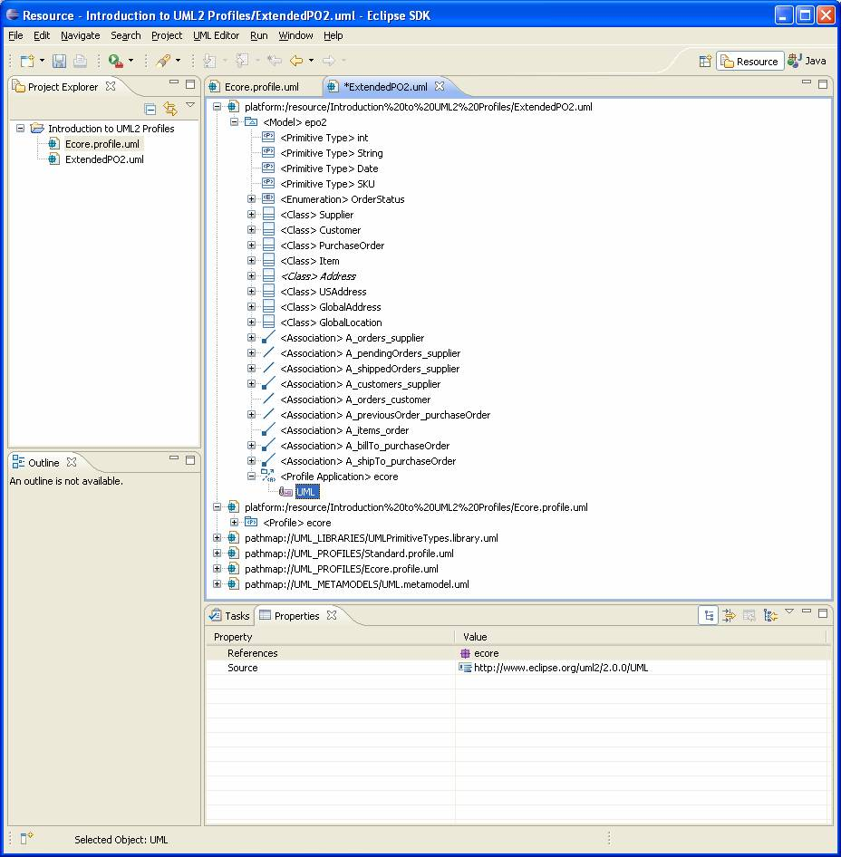<![endif]></p>

<p style='tab-stops:45.8pt 91.6pt 137.4pt 183.2pt 229.0pt 274.8pt 320.6pt 366.4pt 412.2pt 458.0pt 503.8pt 549.6pt 595.4pt 641.2pt 687.0pt 732.8pt'><span
style='mso-spacerun:yes'>�</span>You�ll notice another annotation (with source <b
style='mso-bidi-font-weight:normal'>http://www.eclipse.org/uml2/2.0.0/UML</b>)
has been attached, in this case to keep track of the <span class=SpellE>Ecore</span>
representation for the definition of the profile that is currently applied to
the package. Again, it�s important that this annotation <b style='mso-bidi-font-weight:
normal'>not</b> be modified, since the UML2 profile mechanism depends on this
construct. Note that a newer definition of the profile can be applied using the
same menu item, and a profile (along with all of its stereotypes) can be
unapplied using the <b style='mso-bidi-font-weight:normal'>UML Editor &gt;
Package &gt; <span class=SpellE>Unapply</span> Profile�</b> menu item.</p>

<p style='tab-stops:45.8pt 91.6pt 137.4pt 183.2pt 229.0pt 274.8pt 320.6pt 366.4pt 412.2pt 458.0pt 503.8pt 549.6pt 595.4pt 641.2pt 687.0pt 732.8pt'>Let�s
look at how to perform the same task using Java code. The code snippet below
shows a method that programmatically applies a specified profile to a specified
package.</p>

<pre style='margin-left:8.5pt'><span style='mso-tab-count:1'>���� </span><span
class=GramE>protected</span> static void <span class=SpellE>applyProfile</span>(org.eclipse.uml2.uml.Package package_,</pre><pre
style='margin-left:8.5pt'><span style='mso-tab-count:3'>������������������� </span><span
lang=IT style='mso-ansi-language:IT'>Profile profile) {<o:p></o:p></span></pre><pre
style='margin-left:8.5pt'><span lang=IT style='mso-ansi-language:
IT'><span style='mso-tab-count:2'>�������� </span>package_.applyProfile(profile);<o:p></o:p></span></pre><pre
style='margin-left:8.5pt'><span lang=IT style='mso-ansi-language:IT'><o:p>&nbsp;</o:p></span></pre><pre
style='margin-left:8.5pt'><span lang=IT style='mso-ansi-language:IT'><span
style='mso-tab-count:2'>����������� </span></span><span class=GramE>out(</span>&quot;Profile '&quot; + <span
class=SpellE>profile.getQualifiedName</span>() + &quot;' applied to package '&quot;</pre><pre
style='margin-left:8.5pt'><span style='mso-tab-count:3'>������������������� </span>+ <span
class=SpellE>package_.<span class=GramE>getQualifiedName</span></span><span
class=GramE>(</span>) + &quot;'.&quot;);</pre><pre style='margin-left:8.5pt'><span
style='mso-tab-count:1'>���� </span>}</pre>

<p style='tab-stops:45.8pt 91.6pt 137.4pt 183.2pt 229.0pt 274.8pt 320.6pt 366.4pt 412.2pt 458.0pt 503.8pt 549.6pt 595.4pt 641.2pt 687.0pt 732.8pt'>Here
we call a convenience method on the package <span
style='mso-spacerun:yes'>�</span>that creates a profile application on the
package and sets the profile as the imported profile.</p>

<p style='tab-stops:45.8pt 91.6pt 137.4pt 183.2pt 229.0pt 274.8pt 320.6pt 366.4pt 412.2pt 458.0pt 503.8pt 549.6pt 595.4pt 641.2pt 687.0pt 732.8pt'>OK,
let�s see this method in action. For example, we could apply the �<span
class=SpellE>ecore</span>� profile to the �epo2� model as follows:</p>

<pre><span style='mso-tab-count:2'>������������� </span><span class=SpellE><span
class=GramE>applyProfile</span></span><span class=GramE>(</span>epo2Model, <span
class=SpellE>ecoreProfile</span>);</pre>

<h3 style='tab-stops:45.8pt 91.6pt 137.4pt 183.2pt 229.0pt 274.8pt 320.6pt 366.4pt 412.2pt 458.0pt 503.8pt 549.6pt 595.4pt 641.2pt 687.0pt 732.8pt'>Applying
Stereotypes</h3>

<p style='tab-stops:45.8pt 91.6pt 137.4pt 183.2pt 229.0pt 274.8pt 320.6pt 366.4pt 412.2pt 458.0pt 503.8pt 549.6pt 595.4pt 641.2pt 687.0pt 732.8pt'>We�re
on the home stretch now� Once a profile has been applied to a package,
stereotypes defined in the profile can be applied to instances of the
appropriate <span class=SpellE>metaclasses</span> (as per the defined
extensions). When a stereotype is applied to an element, that element is
effectively extended with the properties that are defined as part of the
stereotype. To apply a stereotype to an element using the UML editor, follow
these steps:</p>

<p style='margin-left:27.5pt;tab-stops:45.8pt 91.6pt 137.4pt 183.2pt 229.0pt 274.8pt 320.6pt 366.4pt 412.2pt 458.0pt 503.8pt 549.6pt 595.4pt 641.2pt 687.0pt 732.8pt'>1)
Select an element (i.e. <b style='mso-bidi-font-weight:normal'>&lt;Property&gt;
<span class=SpellE><span class=GramE>pendingOrders</span></span><span
class=GramE> :</span> <span class=SpellE>PurchaseOrder</span> [0..*]</b> in <b
style='mso-bidi-font-weight:normal'>&lt;Class&gt; Supplier</b>) in the UML
editor.</p>

<p style='margin-left:27.5pt;tab-stops:45.8pt 91.6pt 137.4pt 183.2pt 229.0pt 274.8pt 320.6pt 366.4pt 412.2pt 458.0pt 503.8pt 549.6pt 595.4pt 641.2pt 687.0pt 732.8pt'>2)
Select the <b style='mso-bidi-font-weight:normal'>UML Editor &gt; Element &gt;
Apply Stereotype�</b> menu item.</p>

<p style='margin-left:27.5pt;tab-stops:45.8pt 91.6pt 137.4pt 183.2pt 229.0pt 274.8pt 320.6pt 366.4pt 412.2pt 458.0pt 503.8pt 549.6pt 595.4pt 641.2pt 687.0pt 732.8pt'>3)
Choose a stereotype (i.e. <span class=SpellE><b style='mso-bidi-font-weight:
normal'>ecore::EReference</b></span>)<span class=GramE>,</span> press the <b
style='mso-bidi-font-weight:normal'>Add</b> button, then press the <b
style='mso-bidi-font-weight:normal'>OK</b> button.</p>

<p style='tab-stops:45.8pt 91.6pt 137.4pt 183.2pt 229.0pt 274.8pt 320.6pt 366.4pt 412.2pt 458.0pt 503.8pt 549.6pt 595.4pt 641.2pt 687.0pt 732.8pt'><span
style='mso-spacerun:yes'>�</span>Apply the appropriate stereotypes to other
properties (<b style='mso-bidi-font-weight:normal'>&lt;Property&gt; <span
class=SpellE>shippedOrders</span> : <span class=SpellE>PurchaseOrder</span>
[0..*]</b> in <b style='mso-bidi-font-weight:normal'>&lt;Class&gt; Supplier</b>;
<b style='mso-bidi-font-weight:normal'>&lt;Property&gt; <span class=SpellE>totalAmount</span>
: <span class=SpellE>int</span> [0..1]</b>, <b style='mso-bidi-font-weight:
normal'>&lt;Property&gt; <span class=SpellE>previousOrder</span> : <span
class=SpellE>PurchaseOrder</span> [0..1]</b>, and <b style='mso-bidi-font-weight:
normal'>&lt;Property&gt; customer : Customer</b> in <b style='mso-bidi-font-weight:
normal'>&lt;Class&gt; <span class=SpellE>PurchaseOrder</span></b>; <b
style='mso-bidi-font-weight:normal'>&lt;Property&gt; orders : <span
class=SpellE>PurchaseOrder</span> [0..*]</b> in <b style='mso-bidi-font-weight:
normal'>&lt;Class&gt; Customer</b>) in the ExtendedPO2 model using the UML
editor.</p>

<p style='tab-stops:45.8pt 91.6pt 137.4pt 183.2pt 229.0pt 274.8pt 320.6pt 366.4pt 412.2pt 458.0pt 503.8pt 549.6pt 595.4pt 641.2pt 687.0pt 732.8pt'>At
this point your workspace should look something like this:</p>

<p style='tab-stops:45.8pt 91.6pt 137.4pt 183.2pt 229.0pt 274.8pt 320.6pt 366.4pt 412.2pt 458.0pt 503.8pt 549.6pt 595.4pt 641.2pt 687.0pt 732.8pt'><!--[if gte vml 1]><v:shape
 id="_x0000_i1142" type="#_x0000_t75" style='width:696pt;height:709.5pt'>
 <v:imagedata src="article_files/image029.png" o:title=""/>
</v:shape><![endif]--><![if !vml]>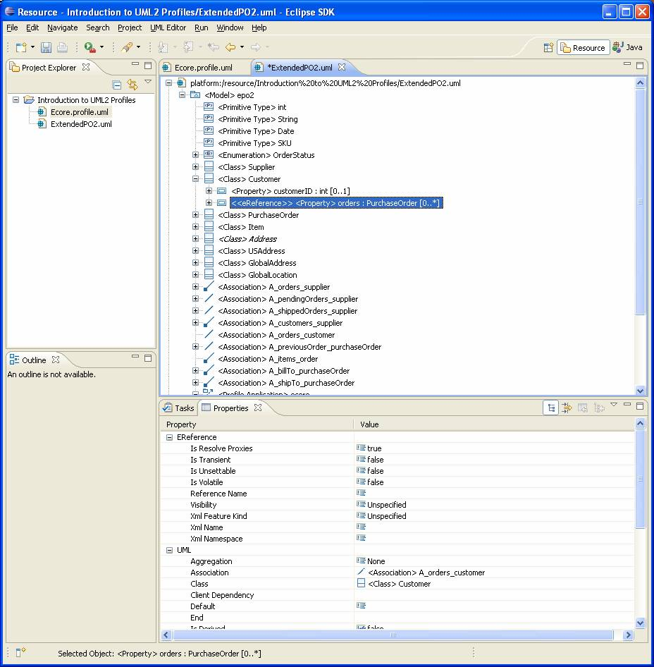<![endif]></p>

<p style='tab-stops:45.8pt 91.6pt 137.4pt 183.2pt 229.0pt 274.8pt 320.6pt 366.4pt 412.2pt 458.0pt 503.8pt 549.6pt 595.4pt 641.2pt 687.0pt 732.8pt'><span
style='mso-spacerun:yes'>�</span>A stereotype (and its tagged values) can be
unapplied using the <b style='mso-bidi-font-weight:normal'>UML Editor &gt;
Element &gt; <span class=SpellE>Unapply</span> Stereotype�</b> menu item.</p>

<p style='tab-stops:45.8pt 91.6pt 137.4pt 183.2pt 229.0pt 274.8pt 320.6pt 366.4pt 412.2pt 458.0pt 503.8pt 549.6pt 595.4pt 641.2pt 687.0pt 732.8pt'>Let�s
look at how to perform the same task using Java code. The code snippet below shows
a method that programmatically applies a specified stereotype to a specified
(named) element.</p>

<pre style='margin-left:.25in'><span style='mso-tab-count:1'>�� </span><span
class=GramE>protected</span> static void <span class=SpellE>applyStereotype</span>(<span
class=SpellE>NamedElement</span> <span class=SpellE>namedElement</span>,</pre><pre
style='margin-left:.25in'><span style='mso-tab-count:3'>������������������ </span>Stereotype <span
class=SpellE>stereotype</span>) {</pre><pre style='margin-left:.25in'><span style='mso-tab-count:2'>������� </span><span class=SpellE><span
class=GramE>namedElement.applyStereotype</span></span><span class=GramE>(</span>stereotype);</pre><pre
style='margin-left:.25in'><o:p>&nbsp;</o:p></pre><pre style='margin-left:.25in'><span
style='mso-tab-count:2'>���������� </span><span class=GramE>out(</span>&quot;Stereotype '&quot; + <span
class=SpellE>stereotype.getQualifiedName</span>()</pre><pre style='margin-left:
.25in'><span style='mso-tab-count:3'>������������������ </span>+ &quot;' applied to element '&quot; + <span
class=SpellE><span class=GramE>namedElement.getQualifiedName</span></span><span
class=GramE>(</span>) + &quot;'.&quot;);</pre><pre style='margin-left:.25in'><span
style='mso-tab-count:1'>�� </span>}</pre>

<p style='tab-stops:45.8pt 91.6pt 137.4pt 183.2pt 229.0pt 274.8pt 320.6pt 366.4pt 412.2pt 458.0pt 503.8pt 549.6pt 595.4pt 641.2pt 687.0pt 732.8pt'>Here
we call a convenience method on the element <span
style='mso-spacerun:yes'>�</span>that creates an instance of the <span
class=SpellE>Ecore</span> class representing the specified stereotype (using
dynamic EMF) and attaches it to the element using an annotation.</p>

<p style='tab-stops:45.8pt 91.6pt 137.4pt 183.2pt 229.0pt 274.8pt 320.6pt 366.4pt 412.2pt 458.0pt 503.8pt 549.6pt 595.4pt 641.2pt 687.0pt 732.8pt'>OK,
let�s see this method in action. For example, we could apply the �<span
class=SpellE>EReference</span>� stereotype to the �<span class=SpellE>pendingOrders</span>�
property of the �Supplier� class in the �epo2� model as follows:</p>

<pre style='margin-left:.25in'><span style='mso-tab-count:2'>���������� </span><span
class=GramE>org.eclipse.uml2.uml.Class</span> <span class=SpellE>supplierClass</span> = (org.eclipse.uml2.uml.Class) epo2Model</pre><pre
style='margin-left:.25in'><span style='mso-tab-count:3'>������������������ </span>.<span
class=SpellE><span class=GramE>getOwnedType</span></span><span class=GramE>(</span>&quot;Supplier&quot;);</pre><pre
style='margin-left:.25in'><o:p>&nbsp;</o:p></pre><pre style='margin-left:.25in'><span
style='mso-tab-count:2'>���������� </span>Property <span class=SpellE>pendingOrdersProperty</span> = <span
class=SpellE>supplierClass</span></pre><pre style='margin-left:.25in'><span
style='mso-tab-count:3'>������������������ </span>.<span class=SpellE><span
class=GramE>getOwnedAttribute</span></span><span class=GramE>(</span>&quot;<span
class=SpellE>pendingOrders</span>&quot;, null);</pre><pre style='margin-left:
.25in'><span style='mso-tab-count:2'>���������� </span><span class=SpellE><span
class=GramE>applyStereotype</span></span><span class=GramE>(</span><span
class=SpellE>pendingOrdersProperty</span>, <span class=SpellE>eReferenceStereotype</span>);</pre>

<p style='tab-stops:45.8pt 91.6pt 137.4pt 183.2pt 229.0pt 274.8pt 320.6pt 366.4pt 412.2pt 458.0pt 503.8pt 549.6pt 595.4pt 641.2pt 687.0pt 732.8pt'><span
style='mso-spacerun:yes'>�</span>Write code to programmatically apply the
appropriate stereotypes to other properties (i.e.
�epo2::Supplier::shippedOrders�, �epo2::PurchaseOrder::totalAmount�,
�epo2::PurchaseOrder::previousOrder�, �epo2::PurchaseOrder::customer�, and
�epo2::Customer::orders�) in the ExtendedPO2 model.</p>

<h3 style='tab-stops:45.8pt 91.6pt 137.4pt 183.2pt 229.0pt 274.8pt 320.6pt 366.4pt 412.2pt 458.0pt 503.8pt 549.6pt 595.4pt 641.2pt 687.0pt 732.8pt'>Accessing
Stereotype Property Values</h3>

<p style='tab-stops:45.8pt 91.6pt 137.4pt 183.2pt 229.0pt 274.8pt 320.6pt 366.4pt 412.2pt 458.0pt 503.8pt 549.6pt 595.4pt 641.2pt 687.0pt 732.8pt'>At
long last, we�re ready to get and set values for the properties (tagged values)
defined in our extensions. To get and set the value for a stereotype property
using the UML editor, follow these steps:</p>

<p style='margin-left:27.5pt;tab-stops:45.8pt 91.6pt 137.4pt 183.2pt 229.0pt 274.8pt 320.6pt 366.4pt 412.2pt 458.0pt 503.8pt 549.6pt 595.4pt 641.2pt 687.0pt 732.8pt'>1)
Select the element to which the stereotyped has been applied (i.e. <b
style='mso-bidi-font-weight:normal'>&lt;&lt;<span class=SpellE>eReference</span>&gt;&gt;
&lt;Property&gt; <span class=SpellE><span class=GramE>pendingOrders</span></span><span
class=GramE> :</span> <span class=SpellE>PurchaseOrder</span> [0..*]</b> in <b
style='mso-bidi-font-weight:normal'>&lt;Class&gt; Supplier</b>) in the UML
editor.</p>

<p style='margin-left:27.5pt;tab-stops:45.8pt 91.6pt 137.4pt 183.2pt 229.0pt 274.8pt 320.6pt 366.4pt 412.2pt 458.0pt 503.8pt 549.6pt 595.4pt 641.2pt 687.0pt 732.8pt'>2)
Enter or select a value (i.e. <b>false</b>) for the property (i.e. <b
style='mso-bidi-font-weight:normal'>Is Resolve Proxies</b>) under the category
named for the stereotype (i.e. <span class=SpellE><b style='mso-bidi-font-weight:
normal'>EReference</b></span>) in the <b>Properties</b> view.</p>

<p style='tab-stops:45.8pt 91.6pt 137.4pt 183.2pt 229.0pt 274.8pt 320.6pt 366.4pt 412.2pt 458.0pt 503.8pt 549.6pt 595.4pt 641.2pt 687.0pt 732.8pt'><span
style='mso-spacerun:yes'>�</span>Get and set values for other stereotype
properties (i.e. <b style='mso-bidi-font-weight:normal'>Is Transient</b> and <b
style='mso-bidi-font-weight:normal'>Is Resolve Proxies</b> under <span
class=SpellE><b style='mso-bidi-font-weight:normal'>EReference</b></span> for <b
style='mso-bidi-font-weight:normal'>&lt;&lt;<span class=SpellE>eReference</span>&gt;&gt;
&lt;Property&gt; <span class=SpellE>pendingOrders</span> : <span class=SpellE>PurchaseOrder</span>
[0..*]</b> in <b style='mso-bidi-font-weight:normal'>&lt;Class&gt; Supplier</b>;
<b style='mso-bidi-font-weight:normal'>Is Volatile</b>, <b style='mso-bidi-font-weight:
normal'>Is Transient</b>, and <b style='mso-bidi-font-weight:normal'>Is Resolve
Proxies</b> under <span class=SpellE><b style='mso-bidi-font-weight:normal'>EReference</b></span>
for <b style='mso-bidi-font-weight:normal'>&lt;&lt;<span class=SpellE>eReference</span>&gt;&gt;
&lt;Property&gt; <span class=SpellE>shippedOrders</span> : <span class=SpellE>PurchaseOrder</span>
[0..*]</b> in <b style='mso-bidi-font-weight:normal'>&lt;Class&gt; Supplier</b>;
<b style='mso-bidi-font-weight:normal'>Is Volatile</b> and <b style='mso-bidi-font-weight:
normal'>Is Transient</b> under <span class=SpellE><b style='mso-bidi-font-weight:
normal'>EAttribute</b></span> for <b style='mso-bidi-font-weight:normal'>&lt;&lt;<span
class=SpellE>eAttribute</span>&gt;&gt; &lt;Property&gt; <span class=SpellE>totalAmount</span>
: <span class=SpellE>int</span> [0..1]</b> in <b style='mso-bidi-font-weight:
normal'>&lt;Class&gt; <span class=SpellE>PurchaseOrder</span></b>; <b
style='mso-bidi-font-weight:normal'>Is Resolve Proxies</b> under <span
class=SpellE><b style='mso-bidi-font-weight:normal'>EReference</b></span> for <b
style='mso-bidi-font-weight:normal'>&lt;&lt;<span class=SpellE>eReference</span>&gt;&gt;
&lt;Property&gt; <span class=SpellE>previousOrder</span> : <span class=SpellE>PurchaseOrder</span>
[0..1]</b> in <b style='mso-bidi-font-weight:normal'>&lt;Class&gt; <span
class=SpellE>PurchaseOrder</span></b>; <b style='mso-bidi-font-weight:normal'>Is
Resolve Proxies</b> under <span class=SpellE><b style='mso-bidi-font-weight:
normal'>EReference</b></span> for <b style='mso-bidi-font-weight:normal'>&lt;&lt;<span
class=SpellE>eReference</span>&gt;&gt; &lt;Property&gt; customer : Customer</b>
in <b style='mso-bidi-font-weight:normal'>&lt;Class&gt; <span class=SpellE>PurchaseOrder</span></b>;
<b style='mso-bidi-font-weight:normal'>Is Resolve Proxies</b> under <span
class=SpellE><b style='mso-bidi-font-weight:normal'>EReference</b></span> for <b
style='mso-bidi-font-weight:normal'>&lt;&lt;<span class=SpellE>eReference</span>&gt;&gt;
&lt;Property&gt; orders : <span class=SpellE>PurchaseOrder</span> [0..*]</b> in
<b style='mso-bidi-font-weight:normal'>&lt;Class&gt; Customer</b>) in the
ExtendedPO2 model using the UML editor.</p>

<p style='tab-stops:45.8pt 91.6pt 137.4pt 183.2pt 229.0pt 274.8pt 320.6pt 366.4pt 412.2pt 458.0pt 503.8pt 549.6pt 595.4pt 641.2pt 687.0pt 732.8pt'>At
this point your workspace should look something like this:</p>

<p style='tab-stops:45.8pt 91.6pt 137.4pt 183.2pt 229.0pt 274.8pt 320.6pt 366.4pt 412.2pt 458.0pt 503.8pt 549.6pt 595.4pt 641.2pt 687.0pt 732.8pt'><!--[if gte vml 1]><v:shape
 id="_x0000_i1143" type="#_x0000_t75" style='width:696pt;height:709.5pt'>
 <v:imagedata src="article_files/image031.png" o:title=""/>
</v:shape><![endif]--><![if !vml]>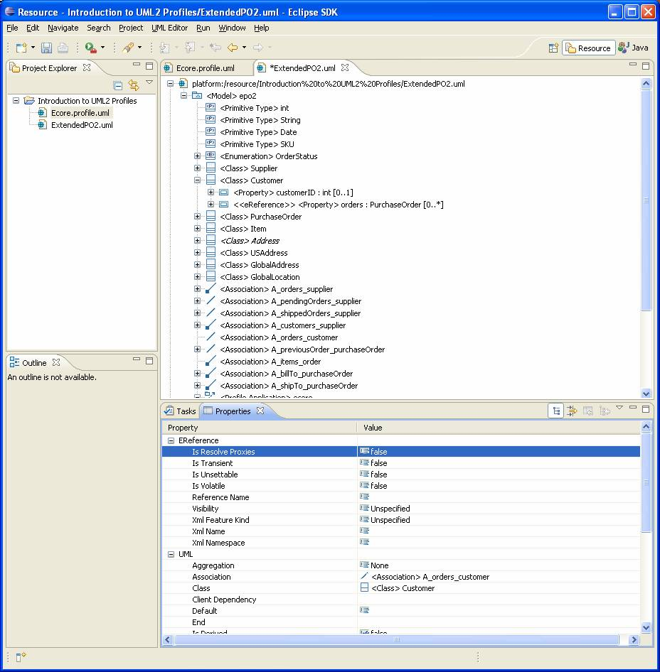<![endif]></p>

<p style='tab-stops:45.8pt 91.6pt 137.4pt 183.2pt 229.0pt 274.8pt 320.6pt 366.4pt 412.2pt 458.0pt 503.8pt 549.6pt 595.4pt 641.2pt 687.0pt 732.8pt'>Let�s
look at how to perform the same task using Java code. The code snippet below
shows a method that programmatically gets and returns the value of a specified
property of a specified stereotype for a specified element.</p>

<pre style='margin-left:.25in'><span style='mso-tab-count:1'>�� </span><span
class=GramE>protected</span> static Object <span class=SpellE>getStereotypePropertyValue</span>(</pre><pre
style='margin-left:.25in'><span style='mso-tab-count:3'>������������������ </span><span
class=SpellE>NamedElement</span> <span class=SpellE>namedElement</span>, Stereotype <span
class=SpellE>stereotype</span>, Property <span class=SpellE>property</span>) {</pre><pre
style='margin-left:.25in'><span style='mso-tab-count:
2'>������� </span>Object value = <span class=SpellE><span class=GramE>namedElement.getValue</span></span><span
class=GramE>(</span>stereotype, <span class=SpellE>property.getName</span>());</pre><pre
style='margin-left:.25in'><o:p>&nbsp;</o:p></pre><pre style='margin-left:.25in'><span
style='mso-tab-count:2'>���������� </span><span class=GramE>out(</span>&quot;Value of stereotype property '&quot; + <span
class=SpellE>property.getQualifiedName</span>()</pre><pre style='margin-left:
.25in'><span style='mso-tab-count:3'>������������������ </span>+ &quot;' on element '&quot; + <span
class=SpellE><span class=GramE>namedElement.getQualifiedName</span></span><span
class=GramE>(</span>) + &quot;' is &quot;</pre><pre style='margin-left:.25in'><span
style='mso-tab-count:3'>������������������ </span>+ <span class=SpellE><span
class=GramE>String.valueOf</span></span><span class=GramE>(</span>value) + &quot;.&quot;);</pre><pre
style='margin-left:.25in'><o:p>&nbsp;</o:p></pre><pre style='margin-left:.25in'><span
style='mso-tab-count:2'>���������� </span><span class=GramE>return</span> value;</pre><pre
style='margin-left:.25in'><span style='mso-tab-count:1'>�� </span>}</pre>

<p style='tab-stops:45.8pt 91.6pt 137.4pt 183.2pt 229.0pt 274.8pt 320.6pt 366.4pt 412.2pt 458.0pt 503.8pt 549.6pt 595.4pt 641.2pt 687.0pt 732.8pt'>Here
we call a convenience method on the (named) element <span
style='mso-spacerun:yes'>�</span>that retrieves the value of a property with a
specified name from the dynamically created <span class=SpellE>Ecore</span>
object instance corresponding to the specified applied stereotype, notifies the
user, and returns it.</p>

<p style='tab-stops:45.8pt 91.6pt 137.4pt 183.2pt 229.0pt 274.8pt 320.6pt 366.4pt 412.2pt 458.0pt 503.8pt 549.6pt 595.4pt 641.2pt 687.0pt 732.8pt'>OK,
let�s see this method in action. For example, we could get the value of the �<span
class=SpellE>isVolatile</span>� property of the �<span class=SpellE>EReference</span>�
stereotype for the �<span class=SpellE>pendingOrders</span>� property of the
�Supplier� class in the �epo2� model as follows:</p>

<pre style='margin-left:.25in'><span style='mso-tab-count:2'>���������� </span><span
class=SpellE><span class=GramE>getStereotypePropertyValue</span></span><span
class=GramE>(</span><span class=SpellE>pendingOrdersProperty</span>, <span
class=SpellE>eReferenceStereotype</span>,</pre><pre style='margin-left:.25in'><span
style='mso-tab-count:3'>������������������ </span><span class=SpellE><span
class=GramE>isVolatileProperty</span></span>);</pre>

<p style='tab-stops:45.8pt 91.6pt 137.4pt 183.2pt 229.0pt 274.8pt 320.6pt 366.4pt 412.2pt 458.0pt 503.8pt 549.6pt 595.4pt 641.2pt 687.0pt 732.8pt'><span
style='mso-spacerun:yes'>�</span>Write code to programmatically get the values
of the other stereotype properties for elements in the ExtendedPO2 model.</p>

<p style='tab-stops:45.8pt 91.6pt 137.4pt 183.2pt 229.0pt 274.8pt 320.6pt 366.4pt 412.2pt 458.0pt 503.8pt 549.6pt 595.4pt 641.2pt 687.0pt 732.8pt'>The
code snippet below shows a method that programmatically sets the value of a
specified property of a specified stereotype for a specified element to a
specified value.</p>

<pre style='margin-left:.25in'><span style='mso-tab-count:1'>�� </span><span
class=GramE>protected</span> static void <span class=SpellE>setStereotypePropertyValue</span>(<span
class=SpellE>NamedElement</span> <span class=SpellE>namedElement</span>,</pre><pre
style='margin-left:.25in'><span style='mso-tab-count:3'>������������������ </span>Stereotype <span
class=SpellE>stereotype</span>, Property <span class=SpellE>property</span>, Object value) {</pre><pre
style='margin-left:.25in'><span style='mso-tab-count:
2'>������� </span><span class=SpellE><span class=GramE>namedElement.setValue</span></span><span
class=GramE>(</span>stereotype, <span class=SpellE>property.getName</span>(), value);</pre><pre
style='margin-left:.25in'><o:p>&nbsp;</o:p></pre><pre style='margin-left:.25in'><span
style='mso-tab-count:2'>���������� </span><span class=GramE>out(</span>&quot;Value of stereotype property '&quot; + <span
class=SpellE>property.getQualifiedName</span>()</pre><pre style='margin-left:
.25in'><span style='mso-tab-count:3'>������������������ </span>+ &quot;' on element '&quot; + <span
class=SpellE><span class=GramE>namedElement.getQualifiedName</span></span><span
class=GramE>(</span>) + &quot;' set to &quot;</pre><pre style='margin-left:
.25in'><span style='mso-tab-count:3'>������������������ </span>+ <span
class=SpellE><span class=GramE>String.valueOf</span></span><span class=GramE>(</span>value) + &quot;.&quot;);</pre><pre
style='margin-left:.25in'><span style='mso-tab-count:1'>�� </span>}</pre>

<p style='tab-stops:45.8pt 91.6pt 137.4pt 183.2pt 229.0pt 274.8pt 320.6pt 366.4pt 412.2pt 458.0pt 503.8pt 549.6pt 595.4pt 641.2pt 687.0pt 732.8pt'>Here
we call a convenience method on the (named) element <span
style='mso-spacerun:yes'>�</span>that sets the value of a property with a
specified name in the dynamically created <span class=SpellE>Ecore</span>
object instance corresponding to the specified applied stereotype and notifies
the user.</p>

<p style='tab-stops:45.8pt 91.6pt 137.4pt 183.2pt 229.0pt 274.8pt 320.6pt 366.4pt 412.2pt 458.0pt 503.8pt 549.6pt 595.4pt 641.2pt 687.0pt 732.8pt'>OK,
let�s see this method in action. For example, we could set the value of the �<span
class=SpellE>isVolatile</span>� property of the �<span class=SpellE>EReference</span>�
stereotype for the �<span class=SpellE>pendingOrders</span>� property of the
�Supplier� class in the �epo2� model to <span class=SpellE><span
style='font-family:"Courier New"'>Boolean.TRUE</span></span> as follows:</p>

<pre style='margin-left:.25in'><span style='mso-tab-count:2'>���������� </span><span
class=SpellE><span class=GramE>setStereotypePropertyValue</span></span><span
class=GramE>(</span><span class=SpellE>pendingOrdersProperty</span>, <span
class=SpellE>eReferenceStereotype</span>,</pre><pre style='margin-left:.25in'><span
style='mso-tab-count:3'>������������������ </span><span class=SpellE><span
class=GramE>isVolatileProperty</span></span>, <span class=SpellE>Boolean.TRUE</span>);</pre>

<p style='tab-stops:45.8pt 91.6pt 137.4pt 183.2pt 229.0pt 274.8pt 320.6pt 366.4pt 412.2pt 458.0pt 503.8pt 549.6pt 595.4pt 641.2pt 687.0pt 732.8pt'><span
style='mso-spacerun:yes'>�</span>Write code to programmatically set the values
of the other stereotype properties for elements in the ExtendedPO2 model.</p>

<h2 style='tab-stops:45.8pt 91.6pt 137.4pt 183.2pt 229.0pt 274.8pt 320.6pt 366.4pt 412.2pt 458.0pt 503.8pt 549.6pt 595.4pt 641.2pt 687.0pt 732.8pt'>Conclusion</h2>

<p style='tab-stops:45.8pt 91.6pt 137.4pt 183.2pt 229.0pt 274.8pt 320.6pt 366.4pt 412.2pt 458.0pt 503.8pt 549.6pt 595.4pt 641.2pt 687.0pt 732.8pt'>Congratulations!
If you�ve made it this far, you�ve successfully created and applied a simple
profile programmatically and/or using the UML editor. There�s a whole lot more
that could be said, but the purpose of this article was just to introduce you
to the concepts. Stay tuned for more articles on how to develop tools with
UML2.</p>

<p style='tab-stops:45.8pt 91.6pt 137.4pt 183.2pt 229.0pt 274.8pt 320.6pt 366.4pt 412.2pt 458.0pt 503.8pt 549.6pt 595.4pt 641.2pt 687.0pt 732.8pt'>For
more information on UML2, visit the <a
href="http://www.eclipse.org/modeling/mdt/?project=uml2#uml2">home page</a> or
join the <a href="news://news.eclipse.org/eclipse.modeling.mdt.uml2">newsgroup</a>.</p>

<h2 style='tab-stops:45.8pt 91.6pt 137.4pt 183.2pt 229.0pt 274.8pt 320.6pt 366.4pt 412.2pt 458.0pt 503.8pt 549.6pt 595.4pt 641.2pt 687.0pt 732.8pt'>References</h2>

<p style='tab-stops:45.8pt 91.6pt 137.4pt 183.2pt 229.0pt 274.8pt 320.6pt 366.4pt 412.2pt 458.0pt 503.8pt 549.6pt 595.4pt 641.2pt 687.0pt 732.8pt'>[1]
K. Hussey. <span class=GramE>�Getting Started with UML2�.</span> International
Business Machines Corp., 2004, 2006.</p>

<p style='tab-stops:45.8pt 91.6pt 137.4pt 183.2pt 229.0pt 274.8pt 320.6pt 366.4pt 412.2pt 458.0pt 503.8pt 549.6pt 595.4pt 641.2pt 687.0pt 732.8pt'><span
class=GramE>[2] F. <span class=SpellE>Budinsky</span>, D. Steinberg, E. <span
class=SpellE>Merks</span>, R. <span class=SpellE>Ellersick</span>, and T. J. <span
class=SpellE>Grose</span>.</span> <i style='mso-bidi-font-style:normal'>Eclipse
Modeling Framework</i>. Pearson Education, Inc., <st1:place><st1:City>Boston</st1:City>,
 <st1:State>MA</st1:State></st1:place>, 2003.</p>

<h2 style='tab-stops:45.8pt 91.6pt 137.4pt 183.2pt 229.0pt 274.8pt 320.6pt 366.4pt 412.2pt 458.0pt 503.8pt 549.6pt 595.4pt 641.2pt 687.0pt 732.8pt'>Source
Code</h2>

<p style='tab-stops:45.8pt 91.6pt 137.4pt 183.2pt 229.0pt 274.8pt 320.6pt 366.4pt 412.2pt 458.0pt 503.8pt 549.6pt 595.4pt 641.2pt 687.0pt 732.8pt'>To
run the example or view the source code for this article, unzip <a
href="http://download.eclipse.org/modeling/mdt/uml2/downloads/articles/uml2.articles_200607181325.zip">uml2.articles_200607181325.zip</a>
into your Eclipse home directory and import the <code>com.ibm.uml2.articles</code>
plug-in into your workspace as a binary project with linked content (<b>File
&gt; Import� &gt; External Plug-ins and Fragments</b>). You can run the <code>IntroductionToUML2Profiles</code>
class as a Java application with two file <span class=SpellE>URIs</span> (e.g.
�file:/C:/Introduction to UML2 Profiles� �<span class=SpellE>jar<span
class=GramE>:file</span></span>:/C:/Eclipse
3.2/eclipse/plugins/org.eclipse.uml2.uml.resources_2.0.0.v200606221411.jar!/�)
as program arguments. The first URI should refer to a folder that contains the
ExtendedPO2 model described in the �Getting Started with UML2� article. The
second URI should use the JAR scheme (since the UML resources plug-in is <span
class=SpellE>JAR�d</span> as of UML2 1.1) and refer to the location of the <span
style='font-family:"Courier New"'>org.eclipse.uml2.uml.resources</span> plug-<span
class=SpellE>in�s</span> JAR archive.</p>

<p style='tab-stops:45.8pt 91.6pt 137.4pt 183.2pt 229.0pt 274.8pt 320.6pt 366.4pt 412.2pt 458.0pt 503.8pt 549.6pt 595.4pt 641.2pt 687.0pt 732.8pt'><span
style='font-size:7.5pt'>Java and all Java-based trademarks and logos are
trademarks or registered trademarks of Sun Microsystems, Inc. in the </span><st1:country-region><st1:place><span
  style='font-size:7.5pt'>United States</span></st1:place></st1:country-region><span
style='font-size:7.5pt'>, other countries, or both.<o:p></o:p></span></p>

</div>

</body>

</html>
